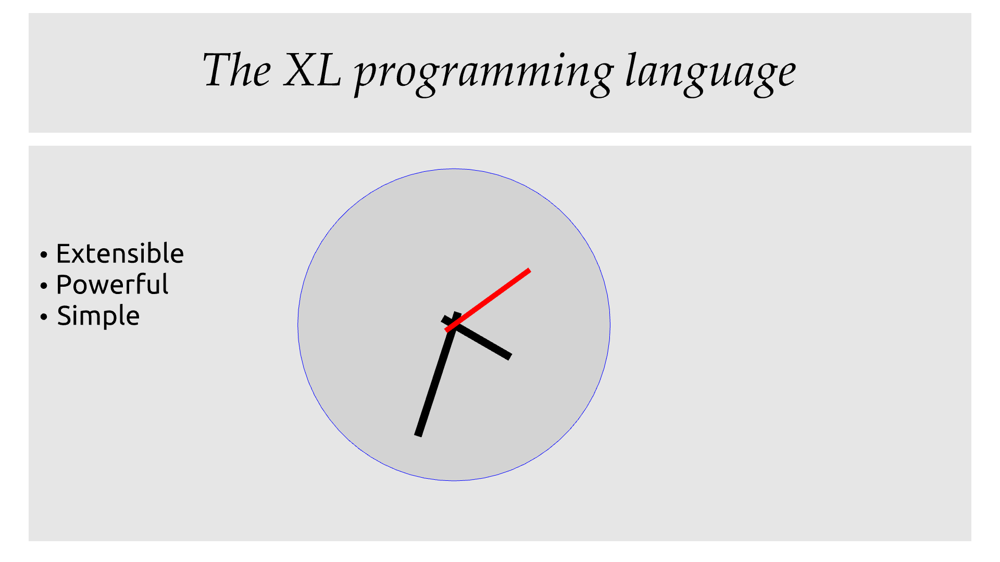

XL is an extensible programming language, designed to accomodate a variety of programming needs with ease.
Being extensible means that the language is designed to make it very easy for programmers to adapt the language to suit their needs, for example by adding new programming constructs. In XL, extending the language is a routine operation, much like adding a function or creating a class in more traditional programming languages. This extensibility is demonstrated by the fact that operations that are built-in in other programming languages, such as integer arithmetic, basic types or loops, are part of the standard library in XL.
As a consequence of this extensibility, XL is intended to be suitable for programming tasks ranging from the simplest to the most complex, from documents and application scripting, as illustrated by Tao3D, to compilers, as illustrated by the XL2 self-compiling compiler to distributed programming, as illustrated by ELFE.
| XL is a work in progress. Even if there are some bits and pieces that happen to already work, and even if there were fully functioning releases like the XL version used in Tao3D in the past, XL is being totally reworked, and the compiler in this repository is presently not suitable for any serious programming. Examples given below may sometimes simply not work. Take it as a painful reminder that the work is far from finished, and, who knows, as an idea for a contribution. See HISTORY for how we came to the present mess. The README gives a quick overview of the language. |
1. Introduction to XL
Extensible? What does that mean for a programming language? For XL, it really means three things:
-
XL has a method to extend the language with any kind of feature, not just functions or data types, but also programming constructs, optimizations, domain-specific notations, and more. Actually, all this is done with a single operator,
is, called the definition operator. -
As a validation of the concept, most features that are built-in in other programming languages, like the
whileloop, or integer arithmetic, are constructed in XL. Specifically, they are provided by the standard library, using techniques that any programmer can use in their program. This, obviously, means that programmers can add their own loops, or their own machine-level data types, and even extend existing ones. -
XL provides complete control over the program translation process. This means that libraries exist or can be written to make XL at least as good as C for low-level bit-twiddling, at least as good as C++ for generic algorithms, at least as good as Ada for tasking, at least as good as Fortran for numerical algorithms, at least as good as Java for distributed programming, and so on.
This may all seem too good to be true. This document explains how the magic happens. But first of all, one thing that really matters: XL is supposed to be simple. Let’s start with a few well-known examples to prove this.
1.1. Two basic examples
It is practically compulsory to begin the presentation of any programming language with a "Hello World" example, immediately followed by a a recursive definition of the factorial function. Let’s follow this long honored tradition.
1.1.1. Hello World
In XL, a program that prints Hello World on the terminal console
output will look like this:
use XL.CONSOLE.TEXT_IO
print "Hello World"The first line imports the XL.CONSOLE.TEXT_IO
module. The program can then use the print
function from that module to write the text on the terminal console.
Why do we need the use statement? There is a general rule in XL
that you only pay for things that you use. Not all programs will use a
terminal console, so the corresponding functions must be explicitly
imported into a program. It is possible that some systems, like
embedded systems, don’t even have a terminal console. On such a
system, the corresponding module would not be available, and the
program would properly fail to compile.
What is more interesting, though, is the definition of print. That
definition is discussed
below, and you will see that it is quite simple, in particular when
compared with similar input/output operations in languages such
as C++.
Another interesting, if slightly more complicated version of "Hello World" is one written in the Tao3D dialect of XL that produces this result:
Source code for the Tao3D "Hello World"
The source code for this example can be found below. The Tao3D dialect
of XL still uses -> instead of is as the definition
operator. Apart from that change, the following code is valid XL for
the language described in this document.
milkyway R ->
// ----------------------------------------------------------------------------
// Draw the Milky Way
// ----------------------------------------------------------------------------
locally
texture_wrap true, true
texture_transform {scale 5, 5, 5}
texture "milkyway.jpg"
rotatey 0.02 * page_time + 100
scale 1, -1, 1
sphere R
earth R ->
// ----------------------------------------------------------------------------
// Draw Earth
// ----------------------------------------------------------------------------
locally
texture "earth.bmp"
texture_wrap true, true
rotatey 5 * page_time + 250
sphere 0, 0, 0, R
hello_world R ->
// ----------------------------------------------------------------------------
// Draw "hello world" text
// ----------------------------------------------------------------------------
locally
frame_texture 1900, 600,
color 1, 1, 1, 1
reset_transform
// If font Arial Unicode installed, it will be used.
// Otherwise, unifont will be used (unifont is packaged
// with Tao presentations).
font "Arial Unicode MS", "unifont", 72
move_to -800, -9, 0
text "Hello World! or Καλημέρα κόσμε; or こんにちは 世界"
rotatey -11 * page_time + 180
color 20% , 20% , 20% , 70%
sphere 0, 0, 0, R - 30
color 100% , 90% , 20% , 90%
sphere 0, 0, 0, Rmilkyway R ->1.1.2. Factorial
A program computing the factorial of numbers between 1 and 5, and then showing them on the console, can be written as follows:
use IO = XL.CONSOLE.TEXT_IO
0! is 1
N! is N * (N-1)!
for I in 1..5 loop
IO.print "The factorial of ", I, " is ", I!We have used an alternative form of the use statement, where the
imported module is given a local nick-name, IO. This form is useful
when it’s important to avoid the risk of name collisions between
modules. In that case, the programmer need to refer to the print
function of the module as IO.print.
The definition of the factorial function shows how expressive XL is, making it possible to use the well-known notation for the factorial function. The definition consists in two parts:
-
the special case of the factorial of
0is defined as follows:0! is 1 -
the general case is defined as follows, and involves a recursion in the form of the
(N-1)!expression:N! is N * (N-1)!
That definition would not detect a problem with something like -3!. The
second form would match, and presumably enter an infinite recursion that would
exhaust available stack space. It is possible to fix that problem by
indicating that the definition only works for positive numbers:
0! is 1
N! when N > 0 is N * (N-1)!Writing the code that way will ensure that there is a compile-time error
for code like -3!, because there is no definition that matches.
1.2. One operator to rule them all
XL has a single fundamental operator, is, called the definition operator. It is an infix operator with a
pattern on the left and an
implementation on the right. In other words,
the pattern for the infix is is Pattern is Implementation, where
Pattern is a program pattern, like X+Y, and Implementation is an
implementation for that pattern, for example Add X, Y. This operator
can also be read as transforms into, i.e. it transforms the code
that is on the left into the code that is on the right.
This single operator can be used to define all kinds of entities.
Simple variables or constants
pi is 3.1415926Lists or data structures
funny_words is "xylophage", "zygomatic", "barfitude"
identity_matrix is
[ [1, 0, 0],
[0, 1, 0],
[0, 0, 1] ]Functions
abs X:number is if X < 0 then -X else XOperators
X ≠ Y is (not X = Y)Specializations for particular inputs
0! is 1
N! when N > 0 is N * (N-1)!Notations using arbitrary combinations of operators
A in B..C is A >= B and A <= COptimizations using specializations
X * 1 is X
X + 0 is XProgram structures
loop Body is { Body; loop Body } // Define an infnite loopTypes type
complex is polar or cartesian
cartesian is type cartesian(re:number, im:number)
polar is type polar(mod:number, arg:number)
types in XL indicate the shape of parse trees. In
other words, the cartesian type above will match any parse tree that
takes the shape of the word cartesian followed by two numbers, like
for example cartesian(1,5).
|
Higher-order functions, i.e. functions that return functions
adder N is { lambda X is N + X }
add3 is ( adder 3 )
// This will compute 8
add3 5The notation lambda X, which can also be written \X, is inspired by
lambda calculus. It makes
it possible to create patterns that match entire
expressions. In other words, X is 0 defines a name, and only the
expression X matches that definition, whereas \X is 0 defines a
"catch-all" pattern that will match 35 or "ABC". This lambda
notation can be used to build something that behaves almost exactly
like an anonymous function in functional languages, although the way
it actually works internally is still based on pattern
matching.
|
The current implementations of XL special-case single-defintion
contexts, and However, this is not consistent with the rest of the language, and
|
Maps that associate a key to a value
my_map is
0 is 4
1 is 0
8 is "World"
27 is 32
lambda N when N < 45 is N + 1
// The following is "World"
my_map 8
// The following is 32
my_map[27]
// The following is 45
my_map (44)This provides a functionality roughly equivalent to std::map in C++.
However, it’s really nothing more than a regular function with a number
of special cases. The compiler can optimize special kinds of mapping to
provide an efficient implementation, for example if all the indexes are
contiguous integers.
Templates (C++ terminology) or generic code (Ada terminology)
// An (inefficient) implementation of a generic 1-based array type
array[1] of T is type
Value : T
1 is Value
array[N] of T when N > 1 is type
Head : array[N-1] of T
Tail : T
lambda I when I<N is Head[I]
lambda I when I=N is Tail
A : array[5] of integer
for I in 1..5 loop
A[I] := I * IVariadic functions
min X, Y is { Z is min Y; if X < Z then X else Z }
min X is X
// Computes 4
min 7, 42, 20, 8, 4, 5, 30In short, the single is operator covers all the kinds of declarations
that are found in other languages, using a single, easy to read syntax.
1.3. The standard library
Each programming language offers a specific set of features, which are characteristic of that language. Most languages offer integer arithmetic, floating-point arithmetic, comparisons, boolean logic, text manipulation (often called "strings"), but also programming constructs such as loops, tests, and so on.
XL provides most features programmers are used to, but they are defined in the XL standard library, not by the compiler. The standard library is guaranteed to be present in all implementations and behave identically. However, it is written using only tools that are available to a regular developer, not just to compiler writers.
1.3.1. Usual programming features
Definitions in the standard library include common fixtures of programming that are built-in in other languages, in particular well-known programming constructs such as loops, tests, and so on.
For example, the if statement in XL is defined in the standard library as follows:
if [[true]] then TrueClause else FalseClause is TrueClause (1)
if [[false]] then TrueClause else FalseClause is FalseClause
if [[true]] then TrueClause is TrueClause
if [[false]] then TrueClause is false| 1 | A value between two square brackets, as in [[true]] and
[[false]], is called a metabox.
It indicates that the pattern must match the actual values in the
metabox. In other words, foo true is ... defines a pattern with a
formal parameter named true, whereas foo [[true]] is ... defines a
pattern which only matches when the argument is equal to constant
true. |
Similarly, the while loop is defined as follows:
while Condition loop Body is
if Condition then
Body
while Condition loop BodyWith the definitions above, programmers can then use if and while
in their programs much like they would in any other programming
language, as in the following code that verifies the
Syracuse conjecture:
while N <> 1 loop
if N mod 2 = 0 then
N /= 2
else
N := N * 3 + 1
print N1.3.2. The next natural evolutionary step
Moving features to a library is a natural evolution for
programming languages. Consider for example the case of text I/O
operations. They used to be built-in for early languages such
as BASIC’s PRINT or Pascal’s WriteLn, but they moved to the
library in later languages such as C with printf. As a result, C has
a much wider variety of I/O functions. The same observation can be
made on text manipulation and math functions, which were all built-in
in BASIC, but all implemented as library functions in C. For tasking,
Ada has built-in construct, C has the pthread library. And so on.
Yet, while C moved a very large number of things to libraries, it still
did not go all the way. The meaning of x+1 in C is defined strictly by
the compiler. So is the meaning of x/3, even if some implementations
that lack a hardware implementation of division have to make a call to
a library function to actually implement that code.
C++ went one step further than C, allowing programmers to
overload operators, i.e. redefine the meaning of an operation
like X+1, but only for custom data types, and only for already
existing operators. In C++, a programmer cannot create the
spaceship operator <=> using the standard language mechanisms.
It has to be implemented in the compiler. The spaceship operator has to be
added
to the language by compiler writers, and it takes a 35-pages article
to discuss the implications. This takes time and a large effort, since
all compiler writers must implement the same thing.
By contrast, all it takes in XL to implement <=> in a variant that
always returns -1, 0 or 1 is the following:
syntax { INFIX 290 <=> }
X <=> Y when X < Y is -1
X <=> Y when X = Y is 0
X <=> Y when X > Y is 1Similarly, C++ makes it extremely difficult to optimize
away an expression like X*0, X*1 or X+0 using only standard
programming techniques, whereas XL makes it extremely easy:
X*0 is 0
X*1 is X
X+0 is XFinally, C++ also makes it very difficult to deal with expressions
containing multiple operators. For example, many modern CPUs feature a
form of
fused multiply-add, which has benefits that include performance and
precision. Yet C++ will not allow you to overload X*Y+Z to
use this kind of operations. In XL, this is not a problem at all:
X*Y+Z is FusedMultiplyAdd(X,Y,Z)In other words, the XL approach represents the next logical evolutionary step for programming languages along a line already followed by highly-successful ancestors.
1.3.3. Benefits of moving features to a library
Putting basic features in the standard library, as opposed to keeping them in the compiler, has several benefits:
-
Flexibility: It is much easier to offer a large number of behaviors and to address special cases.
-
Clarity: The definition given in the library gives a very clear and machine-verifiable description of the operation.
-
Extensibility: If the library definition is not sufficient, it is possible to add what you need. It will behave exactly as what is in the library. If it proves useful enough, it may even make it to the standard library in a later iteration of the language.
-
Fixability: Built-in mechanisms, such as library versioning, make it possible to address bugs without breaking existing code, which can still use an earlier version of the library.
The XL standard library consists of a wide variety of
modules. The top-level module is called XL, and sub-modules are
categorized in a hierarchy. For example, if you
need to perform computations on complex number)s, you would use
XL.MATH.COMPLEX to load the
complex numbers module
The library builtins is a list of definitions
that are accessible to any XL program without any explicit use
statement. This includes most features that you find in languages such
as C, for example integer arithmetic or loops. Compiler options make it
possible to load another file instead, or even to load no file at all,
in which case you need to build everything from scratch.
1.3.4. The case of text input / output operations
Input/output operations (often abbreviated as I/O) are a fundamental
brick in most programming languages. In general, I/O operations are
somewhat complex. If you are curious, the source code for the venerable
printf function in C is
available
online.
The implementation of text I/O in XL is comparatively very simple. The
definition of print looks something like, where irrelevant
implementation details were elided as …:
write X:text as mayfail is ... (1)
write X:integer as mayfail is ...
write X:real as mayfail is ...
write X:character as mayfail is ...
write [[true]] is { write "true" } (2)
write [[false]] is { write "false" }
write Head, Rest is { write Head; write Rest }
print as mayfail is { write SOME_NEWLINE_CHARACTER }
print Items is { write Items; print }| 1 | The mayfail type is used to represent
the nil or error type, in other words it indicates that the
function either returns nothing, or returns an error. |
| 2 | The [[true]] notation is called a metabox,
and indicates that we must match the value of the expression
in the metabox, in that case, true. |
This is an example of variadic function definition in XL. In
other words, print can take a variable number of arguments, much
like printf in C. You can write multiple comma-separated items in a
print. For example, consider the following code:
print "The value of X is ", X, " and the value of Y is ", YThat would first call the last definition of print with the following
binding for the variable Items:
Items is "The value of X is ", X, " and the value of Y is ", Y`This in turn is passed to write, and the definition that matches is
write Head, Rest with the following bindings:
Head is "The value of X is "
Rest is X, " and the value of Y is ", YIn that case, write Head will directly match write X:text and write
some text on the console. On the other hand, write Rest will need to
iterate once more through the write Head, Rest definition, this time
with the following bindings:
Head is X
Rest is " and the value of Y is ", YThe call to write Head will then match one of the implementations of
write, depending on the actual type of X. For example, if X is an
integer, then it will match with write X:integer. Then the last split
occurs for write Rest with the following bindings:
Head is " and the value of Y is "
Rest is YFor that last iteration, write Head will use the write X:text
definition, and write Rest will use whatever definition of write
matches the type of Y.
All this can be done at compile-time. The generated code can then be
reused whenever the combination of argument types is the same. For
example, if X and Y are integer values, the generated code could
be used for the following code:
print "The sum is ", X+Y, " and the difference is ", X-YThis is because the sequence of types is the same. Everything happens as if the above mechanism had created a series of additional definition that looks like:
print A:text, B:integer, C:text, D:integer is
write A, B, C, D
print
write A:text, B:integer, C:text, D:integer is
write A
write B, C, D
write B:integer, C:text, D:integer is
write B
write C, D
write C:text, D:integer is
write C
write DAll these definitions are then available as shortcuts whenever the compiler evaluates future function calls.
The print function as defined above is both type-safe and extensible,
unlike similar facilities found for example in the C programming
language.
It is type-safe because the compiler knows the type of each argument at
every step, and can check that there is a matching write function.
It is extensible, because additional definitions of write will be
considered when evaluating write Items. For example, if you add a
complex type similar to the one defined by the standard library, all
you need for that type to become "writable" is to add a definition of
write that looks like:
write Z:complex is write "(", Z.Re, ";", Z.Im, ")"Unlike the C++ iostream facility, the XL compiler will naturally emit
less code. In particular, it will need only one function call for every
call to print, calling the generated function for the given
combination of arguments. That function will in turn call other
generated functions, but the code sequence corresponding to a
particular sequence of arguments will be factored out between all the
call sites, minimizing code bloat.
Additionally, the approach used in XL makes it possible to offer
specific features for output lines, for example to ensure that a
single line is always printed contiguously even in a multi-threaded
scenario. Assuming a single_thread facility
ensuring that the code is executed by at most one thread, creating a
locked print is nothing more than:
locked_print Items is
single_thread
print ItemsIt is extremely difficult, if not impossible, to achieve a similar
effect with C++ iostream or, more generally, with I/O facilities that
perform one call per I/O item. That’s because there is no way for the
compiler to identify where the "line breaks" are in your code.
1.4. Efficient translation
Despite being very high-level, XL was designed so that efficient translation to machine code was possible, if sometimes challenging. In other words, XL is designed to be able to work as a system language, in the same vein as C, Ada or Rust, i.e. a language that can be used to program operating systems, system libraries, compilers or other low-level applications.
For that reason, nothing in the semantics of XL mandates complex behind-the-scene activites, like garbage collection, thread safety, or even memory management. As for other aspects of the language, any such activity has to be provided by the library. You only pay for it if you actually use it. In other words, the only reason you’d ever get garbage collection in an XL program is if you explicitly need it for your own application.
This philosophy sometimes requires the XL compiler to work extra hard
in order to be more than minimally efficient. Consider for example the
definition of the while loop
given above:
while Condition loop Body is
if Condition then
Body
while Condition loop BodyThat definition can be used in your own code as follows:
while N <> 1 loop
if N mod 2 = 0 then N /= 2 else N := N * 3 + 1What happens is that the compiler looks at the code, and matches against
the definitions at its disposal. The while loop in the code matches
the form while Condition loop Body, provided you do the following
bindings:
Conditions is N <> 1
Body is
if N mod 2 = 0 then N /= 2 else N := N * 3 + 1The definition for the while Condition loop Body form is then
evaluated with the above bindings, in other words, the code below then
needs to be evaluated:
if Condition then
Body
while Condition loop BodyConceptually, that is extremely simple. Getting this to work well is
of course a little bit complicated. In particular, the definition ends
with another reference to while. If the compiler naively generates a
function call to implement a form like that, executing that code
would likely run out of stack space for loops with a large number
of iterations. A special optimization
called tail call elimination is required to ensure the expected
behavior, namely the generation of a machine branch instruction
instead of a machine call instruction.
Furthermore, the reference implementation is just that, a
reference. The compiler is perfectly allowed, even encouraged, to
"cheat", i.e. to recognize common idioms, and efficiently translate
them. One name, builtin, is reserved for that purpose. For example,
the definition of integer addition may look like this:
X:integer + Y:integer as integer is builtin AddThe left part of is here is perfectly standard XL. It tells the
compiler that an expression like X+Y where both X and Y have the
integer type will result in an integer value (that is the meaning of
as integer). The implementation, however, is not given. Instead, the
builtin Add tells the compiler that it has a cheat sheet for that
operations, called Add. How this cheat sheet is actually implemented
is not specified, and depends on the compiler.
1.5. Adding complex features
Features can be added to the language that go beyond a simple notation. This can also be done in XL, although this may require a little bit of additional work. This topic cannot be covered extensively here. Instead, examples from existing implementations will provide hints of how this can happen.
1.5.1. Reactive programming in Tao3D
Reactive programming is a form of programming designed to facilitate the propagation of changes in a program. It is particularly useful to react to changes in a user interface.
Tao3D added reactive programming to XL to deal with user-interface events, like mouse movements or keyboard input. This is achieved in Tao3D using a combination of partial re-evaluation of programs in response to events sent by functions that depend on user-interface state.
For example, consider the following Tao3D program to draw the hands of a clock (see complete YouTube tutorial for more details):
locally
rotate_z -6 * minutes
rectangle 0, 100, 15, 250
locally
rotate_z -30 * hours
rectangle 0, 50, 15, 150
locally
color "red"
rotate_z -6 * seconds
rectangle 0, 80, 10, 200The locally function controls the scope of partial
re-evaluation. Time-based functions like minutes, hours
or seconds return the minutes, hours and seconds of the current
time, respectively, but also trigger a time event each time they
change. For example, the hours function will trigger a time event
every hour.
The locally function controls partial re-evaluation of the code within
it, and caches all drawing-related information within it in a structure
called a layout. There is also a top-level layout for anything created
outside of a locally.
The first time the program is evaluated, three layouts are created by
the three locally calls, and populated with three rectangles (one of
them colored in red), which were rotated along the Z axis (perpendicular
to the screen) by an amount depending on time. When, say, the seconds
value changes, a time event is sent by seconds, which is intercepted
by the enclosing locally, which then re-evaluated its contents, and
then sends a redraw event to the enclosing layout. The two other layouts
will use the cached graphics, without re-evaluating the code under
locally.
All this can be implemented entirely within the constraints of the normal XL evaluation rules. In other words, the language did not have to be changed in order to implement Tao3D.
1.5.2. Declarative programming in Tao3D
Tao3D also demonstrates how a single language can be used to define documents in a way that feels declarative like a declarative language, i.e._similar to HTML, but still offers the power of imperative programming like JavaScript, as well as style sheets reminiscent of CSS. In other words, Tao3D does with a single language, XL, what HTML5 does with three.
For example, an interactive slide in Tao3D would be written
using code like this (note that Tao3D uses import instead of use):
import Slides
slide "The XL programming language",
* "Extensible"
* "Powerful"
* "Simple"This can easily be mis-interpreted as being a mere markup language, something similar to markdown, which is one reason why I sometimes refer to XL as an XML without the M.
However, the true power of XL can more easily be shown by adding the
clock defined previously, naming it clock, and then using it in the
slide. This introduces the dynamic aspect that Javascript brings to
HTML5.
import Slides
clock is
locally
line_color "blue"
color "lightgray"
circle 0, 0, 300
locally
rotate_z -6 * minutes
rectangle 0, 100, 15, 250
locally
rotate_z -30 * hours
rectangle 0, 50, 15, 150
locally
color "red"
rotate_z -6 * seconds
rectangle 0, 80, 10, 200
slide "The XL programming language",
* "Extensible"
* "Powerful"
* "Simple"
anchor
translate_x 600
clockIn order to illustrate how pattern matching provides a powerful method to define styles, one can add the following definition to the program in order to change the font for the titles (more specifically, to change the font for the "title" layouts of all themes and all slide masters):
theme_font Theme, Master, "title" is font "Palatino", 80, italicThe result of this program is an animated slide that looks like the following:

1.5.3. Distributed programming with ELFE
ELFE is another XL-based experiment targeting distributed programming, notably for the Internet of things. The idea was to use the homoiconic aspect of XL to evaluate parts of the program on different machines, by sending the relevant program fragments and the associated data over the wire for remote evaluation.
| ELFE is now integrated as part of XL, and the ELFE demos are stored in the demo directory of XL. |
This was achieved by adding only four relatively simple XL functions:
-
tellsends a program to another node in a "fire and forget" way, not expecting any response. -
askevaluates a remote program that returns a value, and returns that value to the calling program. -
invokeevaluates a remote program, establishing a two-way communication with the remote that the remote can use withreply -
replyallows remote code within aninvoketo evaluate code in its original caller’s context, but with access to all the local variables declared by the remote.
Consider the following program:
WORKER_1 is "pi2.local"
WORKER_2 is "pi.local"
invoke WORKER_1,
every 1.1s,
rasp1_temp is
ask WORKER_2,
temperature
send_temps rasp1_temp, temperature
send_temps T1:real, T2:real is
if abs(T1-T2) > 2.0 then
reply
show_temps T1, T2
show_temps T1:real, T2:real is
print "Temperature on pi is ", T1, " and on pi2 ", T2, ". "
if T1>T2 then
print "Pi is hotter by ", T1-T2, " degrees"
else
print "Pi2 is hotter by ", T2-T1, " degrees"This small program looks like a relatively simple control script. However, the way it runs is extremely interesting.
-
This single program actually runs on three different machines, the original controller, as well as two machines called
WORKER_1andWORKER_2. -
It still looks and feels like a single program. In particular, variables, values and function calls are passed around machines almost transparently. For example
-
the computation
T1-T2insend_tempsis performed onWORKER_1… -
… using a value of
T1that actually came fromWORKER_2through theaskstatement inrasp1_temp. -
Whenever the
replycode is executed, variableT1andT2live onWORKER_1… -
… but within the
reply, they are passed transparently as arguments in order to callshow_tempson the controller.
-
-
Communication occurs primarily between
WORKER_1andWORKER_2, which exchange a message every 1.1s. Communication with the controller only occurs if and when necessary. If the controller resides in Canada and the workers in Australia, this can save substantial networking costs. -
A single
temperaturefunction, with an extremely simple implementation, provides an remarkably rich set of remotely-accessible features that might require a very complex API in other languages.
This last point is worth insisting on. The following program uses the same function to compute the minimum, maximum and average temperature on the remote node. Nothing was changed to the temperature API. The computations are performed efficiently by the remote node.
invoke "pi.local",
min is 100.0
max is 0.0
sum is 0.0
count is 0
compute_stats T:real is
min := min(T, min)
max := max(T, max)
sum := sum + T
count := count + 1
reply
report_stats count, T, min, max, sum/count
every 2.5s,
compute_stats temperature
report_stats Count, T, Min, Max, Avg is
print "Sample ", Count, " T=", T, " ",
"Min=", Min, " Max=", Max, " Avg=", Avg
The definitions of min, max, sum and count would not be
acceptable in the version of XL described in this document. You would
need to write for example min : real := 100 instead of min is 100.0,
since min is 100.0 would declare a constant.
|
To run the ELFE demos, you need to start an XL server on the machines
called pi.local and pi2.local, using the -remote command-line
option of XL:
% xl -remoteYou can then run the program on a third machine with:
% xl 7-two-hops.xlLike for Tao3D, the implementation of these functions is not very complicated, and more importantly, it did not require any kind of change to the basic XL evaluation rules. In other words, adding something as sophisticated as transparently distributed progrmming to XL can be done by practically any programmer, without changing the compiler.
2. XL syntax
For programmers familiar with other programming languages, the syntax of XL may not seem very innovative at first, and that is intentional. Most programmers should be able to read and write correct XL code in a matter of minutes.
The first noticable thing is a disturbing lack of all these nice semi-random punctuation characters that have decorated programs since the dawn of computing and make most source code look like an ornate form of line noise to the uninitiated. Where are all the parentheses gone? Why this horrible lack of curly braces? How can you make sense of a program without a semi-colon to terminate or separate statements?
In reality, the difference between XL syntax and earlier programming languages is much more than skin deep. The syntax of XL is actually one of its most unique characteristics. The design of the XL syntax is essential to understand both the philosophy and implementation of the whole language.
2.1. Homoiconic representation of programs
XL is a homoiconic language, meaning that all XL programs are data and conversely. This makes it particularly easy for programs to manipulate programs, an approach sometimes referred to as metaprogramming. Metaprogramming is the foundation upon which the touted extensibility of XL is built.
2.1.1. Why Lisp remains so strong to this day
In that respect, XL is very much inspired by one of the earliest and most enduring high-level programming languages, Lisp. The earliest implementations of Lisp date back to 1958, yet that language remains surprisingly modern and flourishing today, unlike languages of that same era like Cobol or Fortran.
One reason for Lisp’s endurance is the metaprogramming capabilities deriving from homoiconicity. If you want to add a feature to Lisp, all you need is to write a program that translates Lisp programs with the new feature into previous-generation Lisp programs. This kind of capability made it much easier to add object-oriented programming to Lisp than to languages like C: neither C++ nor Objective C were implemented as just another C library, and there was a reason for that. Unlike Lisp, C is not extensible.
Despite its strengths, Lisp remains confined to specific markets, in
large part because to most programmers, the language remains
surprisingly alien to this day, even garnering such infamous nicknames
as "Lots of Insipid and Stupid Parentheses". As seen from a
concept programming point of view, the
underlying problem is that the Lisp syntax departs from the usual
notations as used by human beings. For example, adding 1 and 2 is
written 1+2 in XL, like in most programming languages, but (+ 1 2)
in Lisp. In concept programming, this notational problem is called
syntactic noise.
XL addresses this problem by putting human usability first. In that sense, it can be seen as an effort to make the power of Lisp more accessible. That being said, XL is quite a bit more than just Lisp with a new fancy and programmer-friendly syntax.
2.1.2. The XL parse tree
The XL syntax is much simpler than that of languages such as C, and arguably not really more complicated than the syntax of Lisp. The parser for XL is less than 800 lines of straightforward C++ code, and the scanner barely adds another 900 lines. By contrast, the C parser in GCC needs more than 20000 lines of code, which is about the size of a complete XL interpreter, and the C++ parser is over twice as much!
A key to keeping things really simple is that the XL syntax is dynamic. Available operators and their precedence are configured primarily through a syntax file. As a result, there are no hard-coded keywords or special operators in the XL compiler.
All XL programs can be represented with a very simple tree structure, called a parse tree. The XL parse tree contains leaf nodes that don’t have any children, such as integer, real, text or symbol nodes, and inner nodes that have at least one child node, such as infix, prefix, postfix and block nodes. In general, when a node can have children, these children can be of any kind.
Leaf nodes contain values that are atomic as far as XL is concerned:
-
integernodes represent non-negative whole numbers like1234,2#1001or16#FFFE_FFFF. -
realnodes represent a floating-point approximation of real numbers like1.234,1.5e-10or2#1.0001_0001#e24. -
operatornodes represent non-alphabetical operators like<=>. -
symbolsnodes regroup names, symbols and a special empty symbol used in the representation of empty blocks like().
Inner nodes contains combinations of other XL nodes:
-
infixnodes represent two operands separated by a name or operator, likeA+BorX and Y. Infix nodes with a "new line" name are used for separate program lines. -
prefixnodes represent two nodes where the operand follows the operator, like+Aorsin X. -
postfixnodes represent two nodes where the operator follows the operand, like3%or45km. -
blocknodes represent a node surrounded by two delimiters, like[a],(a),{a}. Blocks are also used to represent indentation. -
indent_blocknodes are delimited by code indentation.
For example, let’s consider the following code:
if X < 0 then
print "The value of ", X, " is negative"
X := -XAssuming that this program is stored in a file called program.xl, the
XL parse tree for this program can be obtained by using the following
command:
% xl -parse program.xl -style debug -show
(infixthen
(prefix
if
(infix<
X
0))
(block indent
(infix CR
(prefix
print
(infix,
"The value of "
(infix,
X
" is negative"
)))
(infix:=
X
(prefix
-
X
)))))All of XL is built on this very simple data structure.
Some choices, like having distinct integer and real node, were
guided primarily by considerations beyond syntax, for example the need
to be able to precisely define program evaluation or
to represent distinct machine types.
|
The list of node types given above is what the current implementations of XL offer. Some changes may happen in the future, notably:
|
2.2. Leaf nodes
The leaf nodes in XL each have a uniquely identifable syntax.
For example, simply by looking at the sequence of characters, we can
tell that 42 is a whole number, 3.5 is a fractional number, "ABC"
is a text value, 'a' is a character value, ABC is a name, and ->
is an operator. This section describes the syntax for leaf nodes.
| There is currently no provision in the compiler to add new kinds of leaf nodes. This is being considered, and would require a minimal addition to the syntax file. The primary implementation issue is that it would require the syntax of the syntax file to diverge from the XL syntax itself, since numbers or names in the syntax file have to be "hardcoded" somehow |
2.2.1. Numbers
Numbers in XL begin with a digit, i.e. one of 0123456789, possibly
followed by other digits. For example, 0 and 42 are valid XL
numbers. XL describes two kinds of numbers: whole numbers, which
have no fractional part, and fractional numbers, which have a
fractional part.
In the rest of the document, other terminologies, such as
integer or real numbers may be applied for whole numbers and
fractional numnbers respectively. This corresponds to numbers having
been given a type for evaluation purpose. This is notably
the case whenever a computer font is used, e.g. when we refer to
integer or real values. Except as far as syntax is concerned, this
document will very rarely talk about whole numbers or fractional
numbers.
|
A single underscore _ character can be used to separate
digits, as in 1_000_000, in order to increase readability. The
following are not valid XL numbers: _1 (leading underscore),
2_ (trailing underscore), 3__0 (two underscores). While this
is not a requirement, it is considered good style to group digits in
equal-sized chunks, for example 1_000_000 or 04_92_98_05_55.
By default, numbers are written in base 10. Any other numerical base between 2 and 36 can be used, as well as base 64 using a
special syntax. Based numbers can be written by following the base
with the # sign. For example 8#76 is an octal representation
of 62. For bases between 11 and 36, letters A through Z or a through
z represent digit values larger than 10, so that A is 10, f
is 15, Z is 35. Case does not matter. For example, 16#FF and
16#ff are two valid hexadecimal representation of 255.
For base 64, Base64 encoding is
used, and case matters. This is mostly indended for use in binary objects, i.e. after bits. For instance, 64#SGVsbG8h is the base-64
encoding for the number with the same binary representation as the
sequence of ASCII characters in Hello!.
For fractional numbers, a dot . is used as decimal separator,
and must separate digits. For example, 0.2 and 2.0 are valid but,
unlike in C, .2 and`2.` are not numbers but a prefix and
postifix . respectively. This is necessary to avoid ambiguities.
Also, the standard library denotes ranges using
an infix .., so 2..3 is an infix .. with 2 and 3 as
operands, representing the range between 2 and 3.
Numbers can contain an exponent, specified by the letter e or
E. If the exponent is negative, then the number is parsed as a
fractional number. Therefore, 1e3 is integer value 1000, but 1e-3
is the same as 0.001. The exponent is always given in base 10, and it
indicates an exponentiation in the given base, so that 2#1e8 is
28, in other words decimal value 256. For based numbers, the
exponent may be preceded by a # sign, which is mandatory if e or
E are valid digits in the base, as in 16#FF#e2 which is an
hexadecimal representation of decimal value 65280.
There is an implementation-dependent limit for the maximum value a
number can have. This limit cannot be less than 264-1 for
whole numbers, and less than 9.99e99 for floating-point numbers.
If a value is preceded by a + or - sign, that sign is parsed as a
prefix operator and not as part of the number. For example, -2 is a
prefix - with 2 as an argument.
The various syntactic possibilities for XL numbers are only for
convenience, and are all strictly equivalent as far as program execution
is concerned. In other words, a program may not behave differently if a
constant is spelled as 16#FF_FF or as 65535.
One unsatisfactory aspect of XL number syntax is that it does not
offer an obvious path to correctly represent "semantic" version
numbers in the code. For example, a notation like 2.3.1 will parse as
an infix . between real number 2.3 and integer 1, making it
indistinguishable from 2.30.1.
|
|
Computers cannot really represent mathematical numbers. For example, the set of natural numbers is infinite, so there is no such thing as "the largest natural number". Due to hardware limitations, there is however such a thing as the largest 64-bit unsigned number. Similarly, there is no way to accurately represent real numbers in a computer, but there are at least two widely used representations called floating-point and fixed-point. From a concept programming point of view,
this is a blatant case of concept cast. A computer
|
2.2.2. Symbols
Names in XL begin with an letter, followed by letters or digits. For
example, MyName and A22 are valid XL names. A single underscore
_ can be used to separate two valid characters in a name. Therefore,
A_2 is a valid XL name, but A__2 and _A are not.
The current implementation reads its input in Unicode UTF-8
format, and makes crude attempts at accepting Unicode. This was good
enough for Tao3D to deal with multi-lingual text, including in languages
such as Hebrew or Arabic. However, that implementation is a bit naive
with respect to distinguishing Unicode letters from non-letter characters.
For example, 𝝿_2 or étalon are valid XL names, and this is intentional,
but ⇒A2 is presently a valid XL name, and this is considered a bug.
|
Case and delimiters are not significant in XL, so that JOE_DALTON and
JoeDalton are treated identically.
For historical reasons, the current implementations are quite
lacking in that respect, and will treat V and v differently. There
is still an open debate about giving a semantic role to capitalization.
|
Operators begin with one of the ASCII punctuation characters:
! # $ % & ( ) * + , - . / : ; < = > ? @ [ \ ] ^ _ ` { | } ~
Operators longer than one character must be specified in the XL syntax
file. For example, the XL syntax file defines a <= operator, but no
<=> operator. Consequently, the sequence 1 <=> 2 will be parsed as
(1 <= (> 2)). In order to add this operator, it is necessary to
extend the syntax using a syntax
statement.
Names and operators are treated interchangeably by XL after the parsing phase, and are collectively called symbols.
2.2.3. Text
Text in XL is delimited with a pair of single
or double quotes. Text can contain any printable character.
For example, "Hello World" or 'ABC' are valid text in XL. If the
delimiter is needed in the text, it can be obtained by doubling
it. For example, "He said ""Hello""" is text containing He said
"Hello".
Additionally, the XL syntax file can specify
delimiters for "long" text. Long text can include
line-terminating characters, and only terminates when the matching
delimiter is reached. By default, << and >> are long-text
delimiters, so that the following is valid text:
MyLongText is <<
This is a multi-line text
that contains several lines
>>Additional delimiters can be configured, and can
be used to define specific types of text. For example, a program that
often has to manipulate HTML data could allow HTML and
END_HTML as delimiters, so that you could write:
MyHTML is HTML
<p>This is some HTML text here</p>
END_HTML| RATIONALE The reason for a built-in format for text using single or double quotes is because the syntax file is read using the standard XL parser, and it needs text tokens in some specific cases that would otherwise parse incorrectly such as block or comment delimiters. |
2.3. Inner nodes
The inner nodes are defined by the syntax file, which specifies their precedence and associativity.
2.3.1. Indentation and off-side rule
Indentation in XL is significant. XL follows the
off-side rule to define program blocks. There is no need for
keywords such as begin and end, nor for block delimiters such as
{ or }. However, { and } can be used as block
delimiters when needed, for example to create a
block on a single line. The code below shows two equivalent ways to
write the same loop:
loop { Eat; Pray; Love }
loop
Eat
Pray
LoveThe two ways to write the loop above are not just functionally equivalent.
They also share the same parse tree structure, the only difference
being the operators being used. For example, A;B is an infix ;
with A on the left and B on the right, whereas individual lines
are operands of an infix new-line operator. Similarly, {A} is a
block containing A, and indentation is represented in the parse tree
by a block delimited by indent and outdent invisible symbols.
The structure of the second loop from the previous listing can be
shown by the XL compiler using the -show option, as illustrated
below:
% xl -parse loop.xl -style debug -show
(prefix
loop
(block indent
(infix CR
Eat
(infix CR
Pray
Love
))))Indentation must use the same indentation character within a single file, either tab or space. In other words, either your whole file is indented with tabs, or it is indented with spaces, but it is a syntax error to mix both.
Indentation within a block must be consistent. For example, the
following code will cause a syntax error because of the incorrect
indentation of Pray:
loop
Eat
Pray
Love2.3.2. Operator precedence and associativity
The operators available for XL programmers are defined by the
syntax file. The same rules apply for all
symbols, i.e. for names or for operators. The table given in this file
uses keywords such as INFIX, PREFIX and POSTFIX to indicate if
an operator is an infix, a prefix, or a postfix respectively.
The table also gives operators a precedence. For example, the following
segment in the INFIX portion of the table indicates that * and /
have higher precedence than + and -, so that X+Y*Z will parse as
X+(Y*Z):
21 -> is has
310 + -
320 * / mod remThe precedence also indicates associativity for infix operators. Even
precedences indicate left associativity, as for + and * above. This
means that X * Y * Z parses as (X * Y) * Z. Conversely,
right-associativity is indicated by an odd precedence, as is the case
for is. This means that X is Y is Z parses as X is (Y is Z).
Enforcing different precedences for left and right associativity guarantees that it’s impossible for operators to have the same precedence, with some being left-associative and some being right-associative, which would cause parsing ambiguities.
The syntax file uses a few special names:
-
INFIX,PREFIX,POSTFIXandBLOCKintroduce sections that declare the operators of the respective types. -
COMMENTandTEXTspecify delimiters for comments and long text respectively. -
SYNTAXintroduces a child syntax. It is followed by the name of a syntax file, and then by an opening and closing symbol for that syntax. -
BINARYspecifies the names that introduce binary data. The default syntax file usesbits. The syntax for binary data can take one of two forms: either a very large integer constant in big-endian format, as inbits 16#000102030405060708090A0B0C0D0E0F, or the name of a file, as inbits "image.png". -
NEWLINEis used to represent the infix operators that separates individual source code lines. -
STATEMENTis the precedence that delimits expressions from statements. Any operator with a lower precedence belongs to a statement, likeiforloop. Any operator with a higher precedence belongs to an expression, like+or*. -
DEFAULTis the default precedence for names and symbols. It is not very important in practice. -
FUNCTIONis the precedence for names and symbols used as a prefix when they are not explicitly listed in the file. If you writesin Xfor example, the associated precedence will be that ofFUNCTION.
2.3.3. Delimiters
Additional sections of the syntax file define delimiters for comment, block and text. Comment and text delimiters come in pairs.
The default syntax file specifies comments that follow the C/C++
convention, i.e. comments either start with /* and end with */ or
start with // and end with a new line. The basic text separators
(simple and double quotes) are not specified in the syntax file
because they are used to parse the syntax file itself. The default
syntax file adds << and >> as separators for multi-line text..
Block separators come in pairs and have a priority. The special names
INDENT and UNINDENT are used for the indentation block. The block
priority is used to give the priority of the block in an expression, but
also to determine if the block contains an expression or a statement.
In the default syntax file, indentation blocks and blocks delimited by
curly braces { } contain statements, whereas blocks delimited by
parentheses ( ) or square brackets [ ] will contain expressions.
2.3.4. Child syntax
A syntax file can define a child syntax file, which overrides the syntax when a given symbol is found.
The default syntax file contains a
child syntax named C which is activated between
the extern name and a following semi-colon ;. This is used to
approximate C-style parsing for extern declarations, making it easier to
reference C code from XL:
extern real sqrt(real);| The so-called "C syntax" in XL is only a very crude and limited approximation of the actual C syntax, which is only intended for relatively simple function declarations. |
2.3.5. Extending the syntax
The syntax name followed by a block can be used to alter the default
syntax provided by the syntax file. Within the
block, operators can be defined and their precedence given using the
same rules as in the syntax
file.
For example, if you want to add the spaceship operator <=> in your
program, and give the same precedence as ⇐, namely 290, you could
write:
syntax
INFIX 290 <=>
Extending the syntax is intended to also work also in a module.
This means that an use statement can alter the syntax in your source
code. This is, however, rarely recommended. Also, importing a syntax
extension does not presently work.
|
2.4. Making the syntax easy for humans
XL contains a couple of tweaks designed specifically to make code easier to read or write by humans. When the human logic is subtle, so is the XL compiler parsing…
2.4.1. Expression vs. statement
This first tweak is intended to put in XL an implicit grammatical grouping that humans apparently do. Consider for example the following:
print sin X, cos YMost human beings parse this as print (sin(X),cos(Y)), i.e. we call
print with two values resulting from evaluating sin X and cos Y.
This is, however, not entirely logical. If print takes comma-separated
arguments, why wouldn’t sin also take comma-separated arguments? In
other words, why doesn’t this parse as print(sin(X, cos(Y))?
This shows that humans have a notion of expressions vs. statements.
Expressions such as sin X have higher priority than commas and require
parentheses if you want multiple arguments. By contrast, statements such
as print have lower priority, and will take comma-separated argument
lists. An indent or { } block begins a statement, whereas parentheses
() or square brackets [] begin an expression.
There are rare cases where the default rule will not achieve the desired
objective, and you will need additional parentheses. One important such
case is what follow is if it is not a block. Consider the following
declarations:
debug X is write "X=", X
expm1 X is exp X - 1
double X is X; XThe first example parses as intended, as a statement. The second one,
however, is not, despite being syntactically similar. On could want to
see this parse as (exp X) -1, but in reality, it parses as exp (X-1)
for the same reason that the line above parses as write ("X=", X).
Another issue occurs with the body of double X, because it actually
only contains the first X. The ; operator has lower precedence
than is, which is useful for maps, but does not
achieve the expected effect above.
The solution to these problems is use a block on the right of is in
all these cases. The correct way to write the above code is therefore:
debug X is { write "X=", X } (1)
expm1 X is ( exp X - 1 ) (2)
double X is { X; X } (3)| 1 | The curly braces indicate that we expect write to be a statement. |
| 2 | The parentheses indicate that we expect exp to be an expression. |
| 3 | The curly braces ensure that we interpret the sequence as the body
of double X. |
A quality implementation of XL should probably warn if a prefix
is seen on the right of is and has an infix as an
argument. Expressions such as type X or foo(A,B,C) do not present
a risk, but expressions such as foo A-1 do represent present a risk,
and should always be written in a block.
|
2.4.2. infix vs. prefix
Another special rule is that XL will use the presence of a space on only one side of an operator to disambiguate between an infix or a prefix. For example:
write -A // write (-A)
B - A // (B - A)3. XL program evaluation
XL defines program execution primarily in terms of operations on the parse tree combined with operations on an implicit context that stores the program state. The context itself is also described in XL in order to define the expected result of evaluation.
For efficiency, actual implementations are unlikely to store everything as an actual parse tree, although there is an interpreter implementation that does exactly that. A compiler is more likely to optimize representations of both code and data, as long as that optimized representation ultimately respect the semantics described using the normal form for the parse tree.
3.1. Execution phases
Executing an XL program is the result of three phases,
-
A parsing phase where program source text is converted to a parse tree,
-
A declaration phase, where all declarations are stored in the context,
-
An evaluation phase, where statements other than declarations are processed in order.
The execution phases are designed so that in a very large number of cases, it is at least conceptually possible to do both the parsing and declaration phases ahead of time, and to generate machine code that can perform the evaluation phase using only representations of code and data optimized for the specific machine running the program. It should be possible to create an efficient ahead-of-time compiler for XL. Work is currently in progress to build one.
| Reasonably efficient compilers were produced for earlier generations of the language, notably as part of the Tao3D project. However, this earlier iteration of the language had a very weak type system that made advanced optimizations hard to achieve. This was actually a feature for Tao3D, which purposely disabled some optimizations in order to improve compilation speed, notably when the program structure did not change. The version of XL described in this document, however, has markedly evolved relative to what was implemented in Tao3D, with the hope that much better code quality can be achieved. This part has not been demonstrated yet. |
3.1.1. Execution context
The execution of XL programs is defined by describing the evolution of a particular data structure called the execution context, or simply context, which stores all values accessible to the program at any given time.
That data structure is only intended to explain the effect of evaluating the program. It is not intended to be a model of how things are actually implemented. As a matter of fact, care was taken in the design of XL to allow standard compilation and optimization techniques to remain applicable, and to leave a lot of freedom regarding actual evaluation techniques.
In the examples below, CONTEXT0, CONTEXT1, … will denote
pseudo-variables that describe the various currently visible execution
contexts, following the language scoping rules. The most
recent contexts will have higher numbers. In addition, HIDDEN0,
HIDDEN1, … will represent pending execution contexts that are
invisible to the currently executing code. These are also known as
activation records.
Entries in HIDDEN contexts are
live, but invisible to the current
code. By convention, CONTEXT0 and HIDDEN0 are not defined in the
examples and are assumed to be inherited from earlier execution.
3.1.2. Parsing phase
The parsing phase reads source text and turns it into a parse tree using operator spelling and precedence information given in the syntax file. This results either in a parse-time error, or in a faithful representation of the source code as a parse tree data structure that can be used for program evaluation.
Since there is almost a complete equivalence between the parse tree and the source code, the rest of the document will, for convenience, represent a parse tree using a source code form. In the rare cases where additional information is necessary for understanding, it will be provided in the form of XL comments.
Beyond the creation of the parse tree, very little actual processing happens during parsing. There are, however, a few tasks that can only be performed during parsing:
-
Filtering out comments: Comments should not have an effect on the program, so they are simply eliminated during parsing.
-
Processing
syntaxstatements: This must be done during parsing, becausesyntaxis designed to modify the spelling and precedence of operators, and that information is used during the parsing phase. -
Processing
usestatements: Since imported modules can containsyntaxstatements, they must at least partially be processed during parsing. Details aboutusestatements are covered in the chapter about modules. -
Identifying words that switch to a child syntax: symbols that activate a child syntax are recognized during parsing. This is the case for example with the
externname in the default syntax. -
Identifying binary data: words such as
bitsmarked as introducingBINARYdata in the syntax file are treated specially during parsing, to generate parse tree nodes representing binary data. > NOTE: this is not currently implemented.
The need to process use statements during parsing means that it’s not
possible in XL to have computed use statements. The name of the module
must always be evaluated at compile-time.
RATIONALE An alternative would have been to allow computed use
statement, but disallow syntax in them. However, for convenience,
use names look like XL.CONSOLE.TEXT_IO and not, say,
"xl/console/text_io.xs", so there is no obvious way to compute them
anyway. If computed use statement ever become necessary, it will be
easy enough to use the syntax use "path" for them.
|
Once parsing completes successfully, the parse tree can be handed to the declaration and evaluation phases. Parsing occurs for the entire program, including imported modules, before the other phases begin.
3.1.3. Sequences
Both declaration and evaluation phases will process sequences, which are one of:
-
A block, in which case processing the sequence means processing the block’s child
loop { print "Hello World" } -
An infix
NEWLINE, semi-colon;or comma,, in which case the left and right operands of the infix are processed in that order. The comma is typically used in parameter lists and to separate expressions, whereas the semi-colon and new-line are used to separate statements. Processing the infix as a sequence only happens if pattern matching did not succeed with the infix form.print "One"; print "Two" print "Three" -
An
usestatement, which is the only statement that requires processing in all three executation phases.use XL.MATH.COMPLEX -
A
syntaxdefinition, which only plays a role during parsing is ignored during the declaration and evaluation phases.syntax { INFIX 290 <=> } -
An infix
is, which is called a definition, an infix:oras, which are called type annotations, or an infix assignment operator:=with a:type annotation on the left, called a variable initialization. Definitions, type annotations and variable initializations are collectively called declarations, and are processed during the declaration phase.pi is 3.1415 // Definition of 'pi' e as real is 2.71828 // Typed definition of 'e' Count : integer // Variable declaration of 'Count' byte_size X as integer // Function declaration of 'byte_size X' Remaining : integer := 100 // Variable initialization of 'Remaining' -
Anything else, which is called a statement and is processed during the evaluation phase.
print "This is a statement"
For example, consider the following code:
pi is 3.14
circumference 5.3
circumference Radius:real is 2 * pi * RadiusThe first and last line are representing a definition of pi and
circumference Radius:real respectively. The second line is made of one
statement that computes circumference 5.3. There are two definitions,
one statement and no type annotation in this code.
Note that there is a type annotation for Radius in the definition on
the last line, but that annotation is local to the definition, and
consequently not part of the declarations in the top-level sequence.
In that specific case, that type annotation is a declaration of a
parameter called Radius, which only accepts real values.
Sometimes, such parameters are called formal parameters. A parameter
will receive its value from an argument during the evaluation. For
example the Radius parameter will be bound to argument`5.3` while
evaluating the statement on the second line.
The result of a sequence is the value of its last statement. In our
example, the result of executing the code will be the value computed by
circumference 5.3.
3.1.4. Declaration phase
The declaration phase of the program begins as soon as the parsing phase finishes.
During the declaration phase, all declarations are stored in order in the context, so that they appear before any declaration that was already in the context. As a result, the new declarations may shadow existing declarations that match(declaration,shadowing.
In the example above, the declaration phase would result in a context that looks something like:
CONTEXT1 is
pi is 3.14
circumference Radius:real is 2 * pi * Radius
CONTEXT0
HIDDEN0An actual implementation is likely to store declarations is a more efficient manner. For example, an interpreter might use some hashing or some form of balanced tree. Such optimizations must preserve the order of declarations, since correct behavior during the evaluation phase depends on it.
In the case of a compiled implementation, the
compiler will most likely assign machine locations to each of the
declarations. When the program runs, a constant like pi or the
definition of circumference may end up being represented as a
machine address, and a variable such as Radius may be represented as
a "stack location", i.e. a preallocated offset from the current stack
pointer, the corresponding memory location only containing the value,
i.e. the right-hand side of :=. Most of the
type analysis can be performed at compile
time, meaning that most type information is unnecessary at program run
time and can be eliminated from the compiled program.
Note that since the declaration phase occurs before the execution phase,
all declarations in the program will be visible during the evaluation
phase. In our example, it is possible to use circumference before it
has been declared. Definitions may therefore refer to one another in a
circular way. Some other languages such as C require "forward
declarations" in such cases, XL does not.
The parse tree on the left of is, as or : is called the pattern
of the declaration. The pattern will be checked against the form of
parse trees to be evaluated. The right operand of : or as is the
type of the type annotation. The parse tree on the right of is is
called the body of the definition.
3.1.5. Evaluation phase
The evaluation phase processes each statement in the order they appear
in the program. For each statement, the context is looked up for
matching declarations in order. There is a match if the shape of the
tree being evaluated matches the pattern of the declaration. Precise
pattern matching rules will be detailed below.
In our example, circumference 5.3 will not match the declaration of
pi, but it will match the declaration of circumference Radius:real
since the value 5.3 is indeed a real number.
When a match happens, a new context is created with
bindings for the formal parameters to the value
passed as an argument in the statement. This new context is called a
local context and will be used to evaluate the body of the
definition. For example, the local context to evaluate the body of the
definition of circumference Radius:real would be:
CONTEXT2 is
Radius:real := 5.3
CONTEXT1
HIDDEN1
HIDDEN1 is CONTEXT1As a reminder, Radius is a formal parameter, or simply parameter
that receives the argument 5.3 as a result of binding. The binding
remains active for the duration of the evaluation of of the body of the
definition. The binding, at least conceptually, contains the type
annotation for the formal parameter, ensuring that all required
type constraints are known and respected. For
example, the context contains the Redius:real annotation, so that
attempting Radius := "Hello" in the body of circumference would
fail, because the type of "Hello" does not match the real type.
Bindings can be marked as mutable or constant. In
this document, bindings made with := are mutable, while binding made
with is are constant. Since by default, an X : T annotation
creates a mutable binding, the binding for Radius is made with :=.
Once the new context has been created, execution of the program
continues with the body of the definition. In that case, that means
evaluating expression 2 * pi * Radius in the newly created local
context.
After execution of the body completes, the result of that execution
replaces the statement that matched the definition’s pattern. In our
example, circumference 5.3 behaves like 2 * pi * Radius in a context
containing Radius is 5.3.
The process can then resume with the next statement if there is one. In our example, there isn’t one, so the execution is complete.
3.2. Expression evaluation
Executing the body for the definition of circumference Radius:real
involves the evaluation of expression 2 * pi * Radius. This follows
almost exactly the same process as for circumference 5.3, but in that
case, that process needs to be repeated multiple times to complete the
evaluation.
If we apply the evaluation process with 2 * pi * Radius, assuming the
declarations in the standard library, no
declaration has a larger pattern like X * Y * Z that could match the
whole expression. However, there is a definition for a multiplication
between real numbers, with a pattern that looks like X:real *
Y:real as real, as well as another for integer multiplication, with
a pattern that looks like X:integer * Y:integer. There may be more,
but we will ignore them for the rest of this discussion. The code
below shows what the relevant declaration might look like (…
indicates irrelevant code):
X:integer * Y:integer as integer is ...
X:real * Y:real as real is ...The * operator is left-associative, so 2 * pi * Radius parses as
(2 * pi) * Radius. Therefore, we will be looking for a match with X
corresponding to 2 * pi and Y corresponding to Radius. However,
that information alone is insufficient to determine if either
sub-expression is integer or real. In order to be able to make that
determination, immediate evaluation of the
arguments is required. The evaluation process therefore repeats with
sub-expression 2 * pi, and like before, it is necessary to evaluate
pi. This in turns gives the result 3.14 given the current context.
That result replaces pi, so that we now must evaluate 2 * 3.14.
The 2 * 3.14 tree does not match X:real * Y:real because 2 is an
integer and not a real. It does not match X:integer * Y:integer
either because 3.14 is a real and not an integer. However, the
standard library provides a definition of an implicit conversion
that looks something like this:
X:integer as real is builtin IntegerToRealThis implicit conversion tells the compiler how to transform an
integer value like 2 into a real. Implicit conversions are only
considered if there is no exact match, and only one of them can be used
to match a given parameter. In our case, there isn’t an exact match, so
the evaluation will consider the implicit conversion to get a real
from integer value 2.
The body of the implicit conversion above is therefore evaluated in a
context where X is set to 2:
CONTEXT3 is
X:integer := 2
CONTEXT2
HIDDEN2
HIDDEN2 is CONTEXT2The result of that implicit conversion is 2.0. Evaluation can then
resume with the X:real * Y:real as real definition, this time called
with an argument of the correct real type for X:
CONTEXT4 is
X:real := 2.0
Y:real := 3.14
CONTEXT2
HIDDEN2The result of the multiplication is a real with value 6.28, and
after evaluating Radius, evaluation of the second multiplication will
then happen with the following context:
CONTEXT5 is
X:real := 6.28 // from 2 * pi
Y:real :=5.3 // from Radius
CONTEXT2
HIDDEN2The result of the last multiplication is a real with value 33.284.
This is the result of evaluating circumference 5.3, and consequently
the result of executing the entire program.
The standard XL library only provides
implicit conversions that do not cause data loss. On most
implementation, real has a 53-bit mantissa, which means that the
implicit conversion from integer to real is actually closer to the
following:
|
X:integer as real when X >= -2^53 and X < 2^53 is ...3.3. Pattern matching
As we have seen above, the key to execution in XL is pattern matching, which is the process of finding the declarations patterns that match a given parse tree. Pattern matching is recursive, the top-level pattern matching only if all sub-patterns also match.
For example, consider the following declaration:
log X:real when X > 0.0 is ...This will match an expression like log 1.25 because:
-
log 1.25is a prefix with the namelogon the left, just like the prefix in the pattern. -
1.25matches the formal parameterXand has the expectedrealtype, meaning that1.25matches the sub-patternX:real. -
The condition
X > 0.0is true with bindingX is 1.25
There are several kinds of patterns that will match different kinds of expressions:
-
Name definitions match whole names.
-
Wildcards match arbitrary arguments.
-
Type annotations match arguments based on their type.
-
Function (prefix) definitions match prefix forms ("functions").
-
Postfix definitions match postfix forms.
-
Infix definitions match infix forms.
-
Argument splitting match names bound to infix, prefix or postfix values to infix, prefix or postfix patterns.
-
Conditional patterns match values based on arbitrary conditions
-
Literal constants match constants with the same value.
-
Metabox values match values computed by the comiler.
-
Blocks change the priority of expressions.
-
Scope pattern matching allows large lists of paraameters to be passed as argument ina more readable way.
3.3.1. Name definitions
Top-level name patterns only match the exact same name.
| Declaration | Matched by | Not matched by |
|---|---|---|
|
|
|
Definitions with a top-level name pattern are called name definitions.
This case only applies to names, not to operators. You cannot
define a + operator that way.
|
3.3.2. Wildcards
Name patterns that are not at the top-level can match any expression,
and this does not require immediate
evaluation. In that case, the expression will be bound to the name in
the argument context, unless it is already bound in the current context.
In that latter case, the value New of the new expression is compared
with the already bound value Old by evaluating the New=Old
expression, and the pattern only matches if that check evaluates to
true.
| Declaration | Matched by | Not matched by |
|---|---|---|
|
|
|
|
|
|
Such name patterns are called wildcard parameters because they can match any expression, or untyped parameters because no type checking occurs on the matched argument.
In order to catch anything at the top-level, for example in
maps, it is necessary to use the lambda notation:
| Declaration | Matched by | Not matched by |
|---|---|---|
|
Any value |
Nothing |
This case only applies to names, not to operators. You cannot
define a + parameter that way.
|
3.3.3. Type annotations
When the pattern is an infix : or as, it matches an expression if
the expression matches the pattern on the left of the infix, and if the
type of the expression matches the type on the
right of the infix.
A type annotation as a top-level pattern is a declaration:
| Top-level pattern | Matched by | Not matched by |
|---|---|---|
|
|
|
|
|
|
A type annotation as a sub-pattern declares a parameter:
| Parameter pattern | Matched by | Not matched by |
|---|---|---|
|
|
|
|
|
|
Such patterns are called type annotations, and are used to perform
type checking. Normally, type annotations using : are used to declare
the type of parameters, whereas as is used to declare the type of the
expression being defined, as shown for the pattern on the left of is
in the example below:
X:real + Y:real as real is ...For readability, a type annotation for a name can also be matched by an assignment or a name definition with the same name as the formal parameter:
circle (Radius:real, CenterX:real, CenterY:real) as circle
C : circle := circle(Radius := 3.5, CenterX := 6.5, CenterY := 3.3)
picture is type picture
Width : size
Height : size
Buffer : buffer
P : picture is picture
Width is 640
Height is 480
Buffer is my_bufferThe scope pattern matching makes it possible to give arguments in a different order in that case.
3.3.4. Function (prefix) definitions
When the pattern is a prefix, like sin X, the expression will match
only if it is a prefix with the same name, and when the pattern on the
right of the prefix matches the right operand of the expression.
| Pattern | Matched by | Not matched by |
|---|---|---|
|
|
|
|
|
|
When the prefix is a name, definitions for such patterns are called function definitions, and the corresponding expressions are usually called function calls. Otherwise, they are called prefix definitions.
3.3.5. Postfix definitions
When the pattern is a postfix, like X%, the expression will match only
if it is a postfix with the same name, and when the pattern on the left
of the postfix matches the left operand of the expression.
| Pattern | Matched by | Not matched by |
|---|---|---|
|
|
|
|
|
|
Definitions for such patterns are called postfix definitions, and the corresponding expressions are usually called postfix expressions. The name or operator is sometimes called the suffix.
3.3.6. Infix definitions
When the pattern is an infix, it matches an infix expression with the same infix operator when both the left and right operands of the pattern match the corresponding left and right operands of the expression.
| Pattern | Matched by | Not matched by |
|---|---|---|
|
|
|
|
|
|
Definitions for such patterns are called infix definitions, and the corresponding expressions are called infix expressions.
3.3.7. Argument splitting
When the pattern is an infix, a prefix or a postfix, it also matches a name if that name is bound to an infix, prefix or postfix expression that would match. In that case, the bound value is said to be split to match the parameters.
| Pattern | Matched by | Not matched by |
|---|---|---|
|
|
|
|
|
|
|
|
|
|
A very common idiom is to use comma This declaration will match |
3.3.8. Conditional patterns
When a top-level pattern is an infix like Pattern when Condition, then
the pattern matches an expression if the pattern on the left of the
infix matches the expression, and if the expression on the right
evaluates to true after bindings
| Pattern | Matched by | Not matched by |
|---|---|---|
|
|
|
Such patterns are called conditional patterns. They do not match if
the expression evaluates to anything but true, notably if it evaluates
to any kind of error. For example:
log X when X > 0 is ...
log "Logging an error" // Will not match the definition above3.3.9. Literal constants
When the pattern is an integer like 0, a real like 3.5, a text
like "ABC", it only matches an expression with the same value, as
verified by evaluating the Pattern = Value expression, where Pattern
is the literal constant in the pattern, and Value is the evaluated
value of the expression. Checking that the value matches will therefore
require immediate evaluation.
| Pattern | Matched by | Not matched by |
|---|---|---|
|
|
|
This case applies to sub-patterns, as was the case for 0! is 1 in
the definition of factorial. It also applies to
top-level patterns, which is primarily useful in maps:
digits is
0 is "Zero"
1 is "One"3.3.10. Metabox values
When the pattern is a an expression between two square brackets, like
[[true]], it is called a metabox, and it only matches a value that
is equal to the value computed by the metabox. This equality is checked
by evaluating Pattern = Value, where Pattern is the expression in
the metabox, and Value is the expression being tested.
| Pattern | Matched by | Not matched by |
|---|---|---|
|
|
|
A metabox is used in particular when a name would be interpreted as a
parameter. The two declarations below declare a short-circuit boolean
and operator:
[[true]] and X is X
[[false]] and X is falseBy contrast, the two definitions would not work as intended, since they
would simply declare parameters called true and false, always
causing the first one to be evaluated for any A and B expression:
true and X is X
false and X is false3.3.11. Blocks
When the pattern is a block, it matches what the block’s child would match. In other words, blocks in patterns can be used to change the relative precedence of operators in a complex expression, but play otherwise no other role in pattern matching.
| Definition | Matched by | Not matched by |
|---|---|---|
|
|
|
The delimiters of a block cannot be tested that way. In other words, a
pattern with angle brackets can match parentheses or conversely. For
example, [A:integer] will match 2 or (2) or {2}.
It is possible to test the delimiters of a block, but that requires a conditional pattern. For example the following code will check if its argument is delimited with parentheses:
has_parentheses B:block when B.opening = "(" and B.closing = ")" is true
has_parentheses B:block is falseIn some cases, checking if an argument matches a pattern requires evaluation of the corresponding expression or sub-expression. This is called immediate evaluation. Otherwise, evaluation will be lazy.
|
STYLE The rules of pattern matching give a lot of freedom with respect to coding style. Several conventions are recommended and are generally followed in this document:
|
3.3.12. Scope pattern matching
When a block in a pattern defines a scope, i.e. a sequence of declarations or definitions, that scope is called a parameter scope, and it can be matched by any argument scope that provides matching definitions. In that case, the definitions in the argument scope may be provided in a different order, and the scope does not need to use the same delimiters or separators:
circle(Radius:real, CenterX:real, CenterY:real) as circle (1)
C1 : circle := circle(3.5, 2.6, 3.2) (2)
C2 : circle := circle(CenterX is 0.0; CenterY is 1.5; Radius is 2.4) (3)
C3 : circle := circle (4)
Radius is 1.5
CenterX is 3.5
CenterY is 2.4| 1 | The formal parameters are a comma-separated sequence of declarations, meaning that they form a valid scope. A semi-colon or new-line could interchangeably be used there. |
| 2 | This is the normal positional form for argument passing. |
| 3 | An argument scope is passed, which contains the necessary
definitions to match the parameter scope. A semi-colon ; must be
used to separate the definitions, because the comma , has a
higher precedence than is, and therefore cannot be used to
separate is definitions without parentheses. |
| 4 | The argument scope need not use the same separators as the parameter scope. Using indentation and line separators removes the need for parentheses, since all kinds of blocks are equivalent. |
This form is often used for data types containing a large number of parameters:
person is type person
first_name : text
middle_name: text
last_name : text
birthdate : date
address : address
JohnDoe : person := person
last_name is "Doe"
first_name is "John"
middle_name is "W"
birthdate is date { Month is December; Day is 5; Year is 1968 }
address is address
city is "New-York"
street is "42nd"
no is 42
zip is 000023.3.13. Pattern-matching scope
When matching a pattern, a local execution context is created that holds the bindings associated to the patterns being matched. This pattern-matching scope is used while evaluating the body of the definition.
Consider the following simple example:
foo T:text, A:real is
print "T=", T, " A=", A
foo "Hello", 2.5
As indicated earlier, the body associated to
the foo pattern will evaluate with a pattern-matching scope that
looks like:
CONTEXT1 is
T : text is "Hello"
A : real is 2.5
This is particularly useful for structured data values and user-defined data types. In XL, types are defined by the shape of a parse tree, and that shape is typically defined using a pattern. The scoping operator can then be used on values of the type to access the pattern scope.
For example, a complex data type and the addition of complex
numbers can be written as follows:
complex is type complex(Re:real, Im:real) (1) Z1:complex + Z2.complex as complex is complex(Z1.Re+Z2.Re, Z1.Im+Z2.Im) (2) Z:complex := complex(1.3, 4.5) + complex(6.3, 2.5) (3)
| 1 | This is a type definition based on a pattern.
It indicates that the complex data type corresponds to all the
values that have the parse-tree shape following type. |
| 2 | The Z1.Re notation is a scoping operator, and
evaluates Re in the pattern-matching scope of Z1. |
| 3 | Two constructors create two complex values, that
are bound to Z1 and Z2 respectively. In the expression
Z1.Re, the name Re is looked up in pattern-matching scope for
these constructors, so that Z1.Re is 1.3 and Z2.Im is 2.5. |
3.4. Overloading
There may be multiple declarations where the pattern matches a given
parse tree. This is called overloading. For example, as we
have seen above, for the multiplication expression X*Y we have at
least integer and real candidates that look something like:
X:integer * Y:integer as integer is ...
X:real * Y:real as real is ...The first declaration above would be used for an expression like 2+3
and the second one for an expression like 5.5*6.4. It is important for
the evaluation to be able to distinguish them, since they may result in
very different machine-level operations.
In XL, the various declarations in the context are considered in order, and the first declaration that matches is selected. A candidate declaration matches if it matches the whole shape of the tree.
| Historically, the XL2 implementation does not select the first that matches, but the largest and most specialized match. This is a slightly more complicated implementation, but not by far, and it has some benefits, notably with respect to making the code more robust to reorganizations. For this reason, this remains an open option. However, it is likely to be more complicated with the more dynamic semantics of XL, notably for dynamic dispatch, where the runtime cost of finding the proper candidate might be a bit too high to be practical. |
For example, X+1 can match any of the declarations patterns below:
X:integer + Y:integer
X:integer + 1
X:integer + Y:integer when Y > 0
X + Y
Infix:infixThe same X+1 expression will not match any of the following patterns:
foo X
+1
X * YKnowing which candidate matches may be possible statically, e.g. at
compile-time, for example if the selection of the declaration can
be done solely based on the type of the arguments and parameters. This
would be the case if matching an`integer` argument against an
integer parameter, since any value of that argument would match. In
other cases, it may require run-time tests against the values in the
declaration. This would be the case if matching an integer argument
against 0, or against N:integer when N mod 2 = 0.
For example, a definition of the Fibonacci sequence in XL is given below:
fib 0 is 0
fib 1 is 1
fib N is (fib(N-1) + fib(N-2))
Parentheses are required around the
expressions statements in the last
declaration in order to parse this as the addition of fib(N-1) and
fib(N-2) and not as the fib of (N-1)+fib(N-2).
|
When evaluating a sub-expression like fib(N-1), three candidates for
fib are available, and type information is not sufficient to eliminate
any of them. The generated code will therefore have to evaluate N-1.
Immediate evaluation
is needed in order to compare the value against the candidates. If the
value is 0, the first definition will be selected. If the value is
1, the second definition will be used. Otherwise, the third
definition will be used.
A binding may contain a value that may itself need to be
split in order to be tested against the formal
parameters. This is used in the implementation of print:
print Items is { write Items; print }
write Head, Rest is { write Head; write Rest }
write Item:integer is ... // Implementation for integer
write Item:real is ... // implementation for realIn that case, finding the declaration matching print "Hello", "World"
involves creating a binding like this:
CONTEXT1 is
Items is "Hello", "World"
CONTEXT0When evaluating write Items, the various candidates for write
include write Head, Rest, and this will be the one selected after
splitting Items, causing the context to become:
CONTEXT2 is
Head is "Hello"
Rest is "World"
CONTEXT0
HIDDEN1 is CONTEXT13.5. Dynamic dispatch
As shown above, the declaration that is actually selected to evaluate a
given parse tree may depend on the dynamic value of the arguments. In
the Fibonacci example above, fib(N-1) may select any of the three
declarations of fib depending on the actual value of N. This runtime
selection of declarations based on the value of arguments is called
dynamic dispatch.
In the case of fib, the selection of the correct definition is a
function of an integer argument. This is not the only kind of test
that can be made. In particular, dynamic dispatch based on the type of
the argument is an important feature to support well-known techniques
such as object-oriented programming.
Let’s consider an archetypal example for object-oriented programming,
the shape class, with derived classes such as rectangle, circle,
polygon, and so on. Textbooks typically illustrate dynamic dispatch
using a Draw method that features different implementations depending
on the class. Dynamic dispatch selects the appropriate implementation
based on the class of the shape object.
In XL, this can be written as follows:
draw R:rectangle is ... // Implementation for rectangle
draw C:circle is ... // Implementation for circle
draw P:polygon is ... // Implementation for polygon
draw S:shape is ... // Implementation for shape
draw Something // Calls the right implementation based on type of SomethingA single dynamic dispatch may require multiple tests on different
arguments. For example, the and binary operator can be defined
(somewhat inefficiently) as follows:
[[false]] and [[false]] is false
[[false]] and [[true]] is false
[[true]] and [[false]] is false
[[true]] and [[true]] is trueWhen applied to types, this capability is sometimes called multi-methods in the object-oriented world. This makes the XL version of dynamic dispatch somewhat harder to optimize, but has interesting use cases. Consider for example an operator that checks if two shapes intersect. In XL, this can be written as follows:
X:rectangle intersects Y:rectangle as boolean is ... // two rectangles
X:circle intersects Y:circle as boolean is ... // two circles
X:circle intersects Y:rectangle as boolean is ... // rectangle & circle
X:polygon intersects Y:polygon as boolean is ... // two polygons
X:shape intersects Y:shape as boolean is ... // general case
if shape1 intersects shape2 then // selects the right combination
print "The two shapes touch"
Type-based dynamic dispatch is relatively similar to the notion
of virtual function in C++, although the XL
implementation is likely to be quite different. The C++
approach only allows dynamic dispatch along a single axis, based on
the type of the object argument. C++ also features a special
syntax, shape.Draw(), for calls with dynamic dispatch, which differs
from the C-style syntax for function calls, Draw(shape). The syntax
alone makes the intersects example difficult to write in C++.
|
As another illustration of a complex dynamic dispatch not based on types, Tao3D uses theme functions that depend on the names of the slide theme, master and element, as in:
theme_font "Christmas", "main", "title" is font "Times"
theme_font "Christmas", SlideMaster, "code" is font "Menlo"
theme_font "Christmas", SlideMaster, SlideItem is font "Palatino"
theme_font SlideTheme, SlideMaster, SlideItem is font "Arial"As the example above illustrates, the XL approach to dynamic dispatch takes advantage of pattern matching to allow complex combinations of argument tests.
3.6. Immediate evaluation
In the circumference examples, matching 2 * pi * Radius against
the possible candidates for X * Y expressions required an evaluation
of 2 * pi in order to check whether it was a real or integer
value. This is called immediate evaluation of arguments, and is
required in XL for statements, but
also in the following cases:
-
When the formal parameter being checked has a type annotation, like
Radiusin our example, and when the annotation type does not match the type associated to the argument parse tree. Immediate evaluation is required in such cases in order to check if the argument type is of the expected type after evaluation. Evaluation is not required if the argument and the declared type for the formal parameter match, as in the following example:write X:infix is write X.left, " ", X.name, " ", X.right write A+3In that case, since
A+3is already aninfix, it is possible to bind it toXdirectly without evaluating it. So we will evaluate the body with bindingX:infix is A+3. -
When the part of the pattern being checked is a constant or a metabox. For example, this is the case in the definition of the factorial below, where the expression
(N-1)must be evaluated in order to check if it matches the value0in pattern0!:0! is 1 N! is N * (N-1)!This is also the case for the condition in
if-then-elsestatements, to check if that condition matches eithertrueorfalse:if [[true]] then TrueBody else FalseBody is TrueBody if [[false]] then TrueBody else FalseBody is FalseBody -
When the same name is used more than once for a formal parameter, as in the following optimization:
A - A is 0Such a definition would require the evaluation of
Xand2 * Yin expressionX - 2 * Yin order to check if they are equal. -
When a conditional clause requires the evaluation of the corresponding binding, as in the following example:
syracuse N when N mod 2 = 0 is N/2 syracuse N when N mod 2 = 1 is N * 3 + 1 syracuse X+5 // Must evaluate "X+5" for the conditional clause
Evaluation of sub-expressions is performed in the order required to test pattern matching, and from left to right, depth first. Patterns are tested in the order of declarations. Computed values for sub-expressions are memoized, meaning that they are computed at most once in a given statement.
3.7. Lazy evaluation
In the cases where immediate evaluation is not required, an argument will be bound to a formal parameter in such a way that an evaluation of the formal argument in the body of the declaration will evaluate the original expression in the original context. This is called lazy evaluation. The original expression will be evaluated every time the parameter is evaluated.
To understand these rules, consider the canonical definition of while
loops:
while Condition loop Body is
if Condition then
Body
while Condition loop BodyLet’s use that definition of while in a context where we test the
Syracuse conjecture:
while N <> 1 loop
if N mod 2 = 0 then
N /= 2
else
N := N * 3 + 1
print NThe definition of while given above only works because Condition and
Body are evaluated multiple times. The context when evaluating the
body of the definition is somewhat equivalent to the following:
CONTEXT1 is
Condition is N <> 1
Body is
if N mod 2 = 0 then
N /= 2
else
N := N * 3 + 1
print N
CONTEXT0
In the body of the while definition, Condition must be evaluated
because it is tested against metabox [[true]] and [[false]] in the
definition of if-then-else. In that same definition for while,
Body must be evaluated because it is a
statement.
The value of Body or Condition is not changed by them being
evaluated. In our example, the Body and Condition passed in the
recursive statement at the end of the while Condition loop Body are
the same arguments that were passed to the original invokation. For the
same reason, each test of N <> 1 in our example is with the latest
value of N.
Lazy evaluation can also be used to implement "short circuit" boolean
operators. The following code for
the and operator will not evaluate Condition if its left operand
is false, making this implementation of and more efficient than
the one given earlier:
[[true]] and Condition is Condition
[[false]] and Condition is false3.8. Closures
The bindings given above for Condition and Body are somewhat
simplistic. Consider what would happen if you wrote the following
while loop:
Condition is N > 1
while Condition loop N -= 1Evaluating this would lead to a "naive" binding that looks like this:
CONTEXT2 is
Condition is Condition
Body is N -= 1
CONTEXT0That would not work well, since evaluating Condition would require
evaluating Condition, and indefinitely so. Something needs to be done
to address this.
In reality, the bindings must look more like this:
CONTEXT2 is
Condition is CONTEXT1 { Condition }
Body is CONTEXT1 { N-= 1 }
CONTEXT0The notation CONTEXT1 { Condition } means that we evaluate Condition
in context CONTEXT1. This one of the scoping operators,
which is explained in more details below. A prefix with a context on the
left and a block on the right is called a closure.
In the above example, we gave an arbitrary name to the closure,
CONTEXT1, which is the same for both Condition and Body. This name
is intended to underline that the same context is used to evaluate
both. In particular, if Body contains a context-modifying operation
like N -= 1, that will modify the same N in the same CONTEXT1 that
will later be used to evaluate N > 1 while evaluating Condition.
A closure may be returned as a result of evaluation, in which case all or part of a context may need to be captured in the returned value, even after that context would otherwise normally be discarded.
For example, consider the following code defining an anonymous function:
adder N is { lambda X is X + N }
add3 is adder 3 // Creates a function that adds 3 to its input
add3 5 // Computes 8When we evaluate add3, a binding N is 3 is created in a new context
that contains declaration N is 3. That context can simply be written
as { N is 3 }. A context with an additional binding for M is "Hello"
could be written something like { N is 3; M is "Hello" }.
The value returned by adder N is not simply { lambda X is X + N },
but something like { N is 3 } { lambda X is X + N }, i.e. a closure that
captures the bindings necessary for evaluation of the body X + N at a
later time.
This closure can correctly be evaluated even in a context where there is
no longer any binding for N, like the global context after the
finishing the evaluation of add3. This ensures that add3 5 correctly
evaluates as 8, because the value N is 3 is captured in the
closure.
A closure looks like a prefix CONTEXT EXPR, where CONTEXT and EXPR
are blocks, and where CONTEXT is a sequence of declarations.
Evaluating such a closure is equivalent to evaluating EXPR in the
current context with CONTEXT as a local context, i.e. with the
declarations in CONTEXT possibly shadowing declarations in the current
context.
In particular, if argument splitting is required to evaluate the
expression, each of the split arguments shares the same context.
Consider the write and print implementation, with the following
declarations:
write Head, Tail is { write Head; write Tail }
print Items is { write Items; print }When evaluating { X is 42 } { print "X=", X }, Items will be bound
with a closure that captures the { X is 42 } context:
CONTEXT1 is
Items is { X is 42 } { "X=", X }In turn, this will lead to the evaluation of write Items, where
Items is evaluated using the { X is 42 } context. As a result, the
bindings while evaluating write will be:
CONTEXT2 is
Head is CONTEXT1 { "X=" }
Tail is CONTEXT1 { X }
CONTEXT1 is { X is 42 }The whole processus ensures that, when write evaluates write Tail,
it computes X in a context where the correct value of X is
available, and write Tail will correctly write 42.
3.9. Memoization
A sub-expression will only be computed once irrespective of the number of overload candidates considered or of the number of tests performed on the value. Once a sub-expression has been computed, the computed value is always used for testing or binding that specific sub-expression, and only that sub-expression. This is called memoization.
For example, consider the following declarations:
X + 0 is Case1(X)
X + Y when Y > 25 is Case2(X, Y)
X + Y * Z is Case3(X,Y,Z)If you evaluate an expression like A + foo B, then foo B will be
evaluated in order to test the first candidate, and the result will be
compared against 0. The test Y > 25 will then be performed with the
result of that evaluation, because the test concerns a sub-expression,
foo B, which has already been evaluated.
On the other hand, if you evaluate A + B * foo C, then B * foo C
will be evaluated to match against 0. Like previously, the evaluated
result will also be used to test Y > 25. If that test fails, the third
declaration remains a candidate, because having evaluated B * foo C
does not preclude the consideration of different sub-expressions such as
B and foo C. However, if the evaluation of B * foo C required the
evaluation of foo C, then that evaluated version will be used as a
binding for Z.
Another important effect of memoization is that it limits the number of evaluation of top-level constants. In other words, a single evaluation will not "chase constants". Consider the following example:
do_not_chase is
0 is 1
1 is 2
2 is 3
do_not_chase 0 // Returns 1, not 3The evaluation of sub-expression 0 happens only once, and therefore,
1 is not itself evaluated again for the same sub-expression. This is
quite important to get sensible results for maps.
RATIONALE These rules are not just optimizations. They are necessary
to preserve the semantics of the language during dynamic dispatch for
expressions that are not constant. For example, consider a call like
fib(random(3..10)), which evaluates the fib function with a random
value between 3 and 10. Every time random is evaluated, it returns
a different, pseudo-random value. The rules above guarantee that the
same value will be used when testing against 0, 1 or as a binding
with N. Witout these rules, it would be possible for the body of the
general case to be called with a value that is 0 or 1.
|
3.10. Self
In a definition body, self refers to the input parse tree. A
special idiom is a definition where the body is self, called a
self definition. Such definitions indicates that the item being
defined needs no further evaluation. For example, true and false
can be defined as:
true is self
false is selfThis means that evaluating true will return true, and evaluating
false will return false, without any further
evaluation. Note that you cannot write for
example true is true, as true in the body is a statement, which
would require further evaluation, hence an infinite recursion.
It is possible to use self for data structures. For example, in order
to ensure that comma-separated lists are not evaluated, you can write :
X, Y is selfNote that the following values also evaluate as themselves:
-
integer,realortextconstants, unless an explicit declaration in the current context matches. -
Sequences of declarations, like
{ Zero is 0; One is 1 }, in particular the contexts captured for closures.
3.11. Nested declarations
A definition body may itself contain declarations, which are called nested declarations.
When the body is evaluated, a local declaration phase will run, followed by a local evaluation phase. The local declaration phase will add the local declarations at the beginning of a new context, which will be destroyed when the body evaluation terminates. The local declarations therefore shadow declarations from the enclosing context.
For example, a function that returns the number of vowels in some text can be written as follows:
count_vowels InputText is
is_vowel C is
Item in Head, Tail is Item in Head or Item in Tail
Item in RefItem is Item = RefItem
C in 'a', 'e', 'i', 'o', 'u', 'y', 'A', 'E', 'I', 'O', 'U', 'Y'
Count : integer := 0
for C in InputText loop
if is_vowel C then
Count += 1
Count
count_vowels "Hello World" // Returns 3This code example defines a local helper is_vowel C that checks if C
is a vowel by comparing it against a list of vowels. That local helper
is not visible to the outer scopes, in other words, to the rest of the
program. You cannot use is_vowel X elsewhere in the program, since it is
not present in the outer context. It is, however, visible while
evaluating the body of count_vowels T.
Similarly, the local helper itself defines an even more local helper
infix in in order ot evaluate the following expression:
C in 'a', 'e', 'i', 'o', 'u', 'y', 'A', 'E', 'I', 'O', 'U', 'Y'
While evaluating count_vowels "Hello World", the context will look
something like:
CONTEXT1 is
is_vowel C is ...
Count:integer := 0
InputText is "Hello World"
CONTEXT0In turn, while evaluating is_vowel Char, the context will look
something like:
CONTEXT2 is
Item in Head, Tail is ...
Item in RefItem is ...
C is 'l'
CONTEXT1The context is sorted so that the innermost definitions are visible
first, possibly shadowing outer
declarations. Also, outer declarations are
visible from the body of inner ones. In the example above, the body
of is_vowel Char could validly refer to Count or to InputText.
|
This example is designed for illustration purpose only. It is not idiomatic XL, since the standard library provides useful tools. A better way to write it would be: count_vowels InputText is count C in InputText where C in "aeiouyAEIOUY" |
3.12. Scoping
A list of declarations, similar to the kind that is used in closures, is called a map and evaluates as itself. One of the primary uses for maps is scoping, in other words defining a common scope for the declarations that it contains. Since the declaration phase operates on entire blocks, all declarations within a scope are visible at the same time.
There are two primary operations that apply to a map:
-
Applying a map as a prefix to an operand, as we saw with closures, evaluates the operand in the context defined by overlaying the map definitions on top of the current context.
-
Scoping an expression within a map uses the infix
.operator, where the expression on the right is evaluated in a context that consists exclusively of the declarations in the map on the left.
Evaluating a closure is a prime example of map application. The
context is captured by the closure in a map, and
the closure itself is a prefix that corresponds to the map
application. Such an expression can also be created explicitly. For
example, { X is 40; Y is 2 } { X + Y } will evaluate as 42, taking
X and Y from the map, and taking the declaration used to evaluate
X + Y from the current context.
Another common usage for maps is to store declarations where the
patterns are constant values. For example, you
can use a map called digit_spelling to convert a digit to its
English spelling:
digit_spelling is
0 is "zero"
1 is "one"
2 is "two"
3 is "three"
4 is "four"
5 is "five"
6 is "six"
7 is "seven"
8 is "eight"
9 is "nine"With this declaration, the expression digit_spelling 3 evaluates to
"three". This kind of map application is called indexing. A
suggested style choice is to make the intent more explicit using square brackets, i.e. digit_spelling[4], as a nod to the syntax of
programming languages such as C or C++.
When the index is an expression, for example digit_spelling[A+3] in a
context where A is 2, we must evaluate A+3 in the current context
augmented with the declarations in digit_spelling. In other words,
the relevant context for evaluation will look something like:
{ X:integer+Y:integer as integer is ... }
{ A is 2 }
{ 0 is "zero"; 1 is "one"; ... }
[A+3]
The first candidate for evaluation has pattern 0. This requires
immediate evaluation of expression A+3 to
check if it matches the value. Naively, one might think that
evaluating it requires matching once more against 0, and that the
evaluation would neve terminate. However,
memoization of sub-expression A+3 means that it
can no longer be evaluated in the inner context.
It can still, however, be evaluted in the outer context. In that outer
context, the pattern matches the X:integer+Y:integer pattern, from
which it computes value 2+3, and then returns 5 for comparison in
the inner context, in order to compare it against 0. Since 0=5
fails, it then considers the next candidate, but again because of
memoization, there is no need to re-evaluate the value of
sub-expression A+3. Instead, the computed value 5 will be compared
successively against 1, 2, and so on, until it matches 5. The
returned value for the inner expression is therefore "five".
A map is not restricted to constant patterns. For example, the following
map performs a more complete spelling conversion for numbers below 1000
(the notation \N being a shortcut for lambda N):
number_spelling is
\N when N<10 is digit_spelling[N]
11 is "eleven"
12 is "twelve"
13 is "thirteen"
14 is "fourteen"
15 is "fifteen"
16 is "sixteen"
17 is "seventeen"
18 is "eighteen"
19 is "nineteen"
20 is "twenty"
30 is "thirty"
40 is "forty"
50 is "fifty"
60 is "sixty"
70 is "seventy"
80 is "eighty"
90 is "ninety"
\N when N<100 is (number_spelling[N/10*10] & " " &
digit_spelling[N mod 10])
\N when N<1000 is (digit_spelling[N/100] & " hundred and " &
digit_spelling[N mod 100])Another common idiom is to use a named map to group related declarations. This is the basis for the XL module system. For example, consider the following declaration:
byte_magic_constants is
num_bits is 8
min_value is 0
max_value is 255With that declaration, byte_magic_constants.num_bits evaluates to 8.
A declaration like this can of course be more than a simple name:
magic_constants(Bits) is
num_bits is Bits
min_value is 0
max_value is 2^Bits - 1In that case, magic_constants(4).max_values will evaluate to 15.
This is also exactly what happens when you use a module. For example,
with use IO = XL.CONSOLE.TEXT_IO, a local name IO is created in the
current context that contains the declarations in the module. As a
result, IO.write will refer to the declaration in the module.
3.13. Super lookup
In a given context, super is a way to refer to the enclosing scope.
X is 42
foo X:integer is X + super.X // super.X refers to X above
foo 3 // Returns 453.14. Assignments and moves
The infix := operator is used to perform assignments and
returns the value being assigned. Variants such as +=, -=, *=,
/= are equivalent to performing the corresponding operating and
assigning the result.
X : integer := 0 // Initialize X to 0
X := 5 // Now X contains value 5
X += 7 // Now X contains value 12
The := operator (and only that operator) is a variable
declaration when its left operand is an infix :. This was discussed
earlier, and corresponds to the first line in the
example above. A variable declaration is not an assignment.
|
Seven combined operators are defined independently of the type as follows:
X += Y is X := X + Y
X -= Y is X := X - Y
X *= Y is X := X * Y
X /= Y is X := X / Y
X &= Y is X := X & Y
X |= Y is X := X | Y
X ^= Y is X := X ^ YXL offers two additional operators, the :+ copy operator and the
:< move operator (which is also sometimes cut operator because of
its shape that evokes scissors). The :+ operator guarantees that all
data is being copied, and that the new object is an independent copy of
the original (hence the + character in it). The :< operator may
simply move ownership of the value if that is less expensive than
copying it, and invalidates the right side of the operator, which may no
longer be used.
Depending on the data type, := may correspond to a copy or a move. The
precise details of which operator is selected and the associated
rationale are detailed in the next
chapter. In all cases, the previous value that was held in the left
operand is destroyed by the
assignment.
The := operator is used to transfer arguments to parameters. This
means that passing an argument in XL, like in Rust, can make the
argument invalid in the caller if it is moved rather than copied. There
are, however, multiple ways to pass arguments. This is all discussed in
more details in the next chapter.
RATIONALE For simple types such as arithmetic types, an assignment
performs a copy, which is a relatively inexpensive memmory copy between
fixed-size locations. For more complicated data types, such as
spreadsheet, graph or picture, a copy involves copying possibly
megabytes of data, or complex webs of interconnected objects, which can
be very expensive, and often leaves an unused copy behind. For such data
types, moving data is the frequently desirable operations, for example
to pass objects around as arguments, and copying data is the less
frequent case. In any case, the programmer remains in charge, always
having the possibility to explicitly request a copy or a move.
|
3.15. Functions as values
Unlike in several functional languages, when you declare a "function", you do not automatically declare a named entity or value with the function’s name.
For example, the first definition in the following code does not create
any declaration for my_function in the context, which means that the
last statement in that code will cause an error.
my_function X is X + 1
apply Function, Value is Function(Value)
apply my_function, 1 // Error: Nothing called 'my_function'
RATIONALE One reason for that choice is that
overloading means a multiplicity of declarations
often need to be considered for a single expression. Another reason is
that declarations can have arbitrarily complex patterns. It is not
obvious what name should be given to a declaration of a pattern like
A in B..C: a "name" like in.. does not even "work"
syntactically.
|
It is not clear how such a name would be called as a function either,
since some of the arguments may themselves contain arbitrary parse
trees, as we have seen for the definition of print, where the single
Items parameter may actually be a comma-separated list of arguments
that will be split when calling write Items and matching it to
write Head, Tail.
If you need to perform the operation above, it is however quite easy to
create a map that performs the operation. That map may be given a name
or be anonymous. The following code example shows two correct ways to
write such an apply call for a factorial definition:
0! is 1
N! is N * (N-1)!
apply Function, Value is Function(Value)
// Using an anonymous map to compute 3!
apply { \N is N! }, 3
// Using a named map to compute 5!
factorial is { \N is N! }
apply factorial, 5Passing definitions like this might be seen as related to what other languages call anonymous functions, or sometimes lambda function in reference to Church’s lambda calculus. The way this works, however, is markedly different internally, and is detailed in the section on scoping above.
3.16. Error handling
Code that fails will generally report it by returning an error value.
Error values have the error type. For
example, consider the sqrt (square root) function. That function is
only defined for positive values.
sqrt X:real as real when X >= 0 is ...
print "Square root of 2 is ", sqrt 2 // OK
print "Square root of -1 is ", sqrt(-1) // ErrorThis program will print something similar to the following
Square root of 2 is 1.41421356237
Square root of -1 is Error: No form matches sqrt(-1)This message is not very informative. For that reason, it is customary to add specific error messages for well-identified conditions:
sqrt X:real as real when X >= 0 is ...
sqrt X:real as error when X < 0 is error "Square root of negative real ", XIn that case, the output will change to something like:
Square root of 2 is 1.41421356237
Square root of -1 is Error: Square root of negative real -1.0There are multiple ways to handle errors:
-
Taking error parameters lets you explicitly deal with errors, for example to show an error message.
-
Fallible types deal with cases where you expect a value or an error.
-
Try-Catch will let you special-case error conditions.
-
Error statements automatically propagate errors without cluttering your code with error checking conditions.
3.16.1. Taking error parameters
The simplest way to handle errors is to have a variant of the function
that takes an error as an argument. For example, you could extend your
square root function as follows:
sqrt X:real as real when X >= 0 is ...
sqrt X:real as error when X < 0 is error "Square root of negative real ", X
sqrt E:error as error is error "Square root of error: ", ENow if you attempt to take the square root of an error, you will get a different output:
print "Double error is ", sqrt(sqrt(-1))
Double error is Error: Square root of error: Square root of negative real -1.0
As the code above illustrates, print and write are examples
of functions that take an error parameter. In that case, these
functions will print the associated error message.
|
3.16.2. Fallible types
Another way to handle errors is to use mayfail T types, which hold
either a T or an error. The mayfail type (without a type
argument) is the same as mayfail nil, and is normally used for
functions that are not expected to return a value, but can return an
error.
mayfail T contains four accessible features:
-
valueis aTvalue, and can only be accessed when there was no error (otherwise, it returns… anerror!) -
erroris anerrorvalue that should only be accessed when there was an error. Otherwise, it returnsnil. -
goodistrueif there was no error, andbadotherwise. -
badis equivalent tonot good.
The following code shows how to use a mayfail real type to return
0.0 for the sqrt of a negative value:
sanitized_sqrt X:real as real is
R : mayfail real := sqrt X
if R.bad then
print "Got an error in sqrt: ", R.error
R := 0.0
return R.value3.16.3. Try-Catch
A third way to handle errors is to use a try Body catch Handler form,
which evaluates Body, and if Body returns an error, evaluates
Handler instead. The error that was caught by catch is called
caught.
With this construct, the sanitized_sqrt above can be written in a much
shorter and more idiomatic way as follows:
sanitized_sqrt X:real as real is
try
sqrt X
catch
print "Got an error in sqrt: ", caught
0.0
This may look like exception handling, and intentionally so.
However, error values are not exceptions in that they don’t
automatically propagate across functions like C++ exceptions do. If an
error happens at some level, you must deal with it at that level, if
only to explicitly pass it along. This is done
automatically in many cases, so that the end
result may feel a little like exceptions, but conceptually, this is
always an error value being returned, not an exception being thrown.
|
3.16.4. Error statements
If a statement, assignment or declaration returns an error, then as a
special evaluation rule, that any error value is immediately returned by
the enclosing function. It is a type error if the interface of the
enclosing function does not allow an error return value.
For example, in C, it is frequent to have code that looks like:
Thing *read_thing_from_file(const char *filename)
{
FILE *file = fopen(filename, "r");
if (file == NULL)
return NULL;
Thing *thing = malloc(sizeof(Thing))
if (thing == NULL)
{
fclose(file);
return NULL;
}
thing->header = malloc(sizeof(ThingHeader));
if (thing->header == NULL)
{
free(thing);
fclose(file);
return NULL;
}
size_t header_read = fread(&thing->header, 1, sizeof(ThingHeader), file);
if (header_read != sizeof(ThingHeader))
{
free (thing->header);
free (thing);
fclose(file);
return NULL;
}
if (thing->header.size < MIN_SIZE)
{
log_error("Header size is too small: %u", thing->header.size);
free(thing->header);
free(thing);
fclose(file);
return NULL;
}
// ... possibly more of the same
fclose(file);
return thing;
}In XL, handling error values is implicit, so that code similar to the
above can be written as follows:
read_thing_from_file FileName:text as mayfail own thing is
F:file := file.open(FileName) // May error out
H:own thing_header := read(F) // May error out (and close F)
if H.size < MIN_SIZE then
// Explicitly error out with custom message
error "Header size is too small", H.size
T:own thing := thing(H) // May error out, dispose H, close F
// ... possibly more of the same
TThe notation own T above is an
owning type that dynamically
allocates an object from the heap.
3.17. Interface and implementation
XL provides strong encapsulation by allowing a programmer to hide irrelevant details of an implementation. This is fundamental to provide a robust module system.
All values in XL expose an interface, which define what can be done with the value, and also have an implementation of their interface to tell the program how operations actually happen. The interface needs to be visible for the program to be correct, but various mechanisms may allow to hide the implementation.
For example, a variable integer value named X has the following
interface:
X : integerThis is all that is really needed in order to recognize the validity and
meaning of operations such as X+X, 2*X+1, X<0 or X:=18. The
actual value of X does not matter. In other words, it is sufficient to
have the interface above to use X, an implementation like the one
shown below can be hidden to the users of X:
X : integer := 42The same is true for functions. For example, a function checking if a value is even could expose the following interface:
is_odd N:integer as booleanBased on this interface alone, I know that I can write code that checks if a value is even or odd:
for I in 1..100 loop
if is_odd I then
print I, " is odd"
else
print I, " is even"It does not matter if is_odd is actually implemented as follows:
is_odd N:integer as boolean is N mod 2 <> 0or maybe as folows using the bitwise and operator:
is_odd N:integer as boolean is N and 1 = 1The declarations must specify the interface of the values being used, but they need not specify the implementation. A definitions of the value must be provided at some point that matches the declaration and specifies an implementation, but that definition may be in a different source file.
| RATIONALE In languages such as C++, some members of a class can be made private or protected. This restricts their usage, but the compiler (and the programmer) still have knowledge of internal details of the implementation. This facilitates some low-level copmiler optimizations (most of which are obsolete or irrelevant today when link-time optimizations are widely available), but also results in a number of long-term maintenance issues. Exposing implementation details in the interface worsens the fragile base class problem, since some aspects of the implementation are public enough that they cannot be modified. In XL, the implementation can be truly hidden, and an implementation must be able to generate code that does not depend on the implementation when the situation requires it, for example if the implementation may be in a different shared library than the code using the interface. |
4. Types
XL types are a way to organize values by restricting which operations
can be selected during evaluation. For example, knowing that A is a
real allows expression A+A to match declaration pattern
X:real+Y:real, but prevents it from matching pattern
X:integer+Y:integer.
In XL, types are based on the shape of parse trees.
A type identifies the tree patterns that belong to the type. The
expression type(Pattern) returns the type for the given type
declaration pattern. For example, the type for all additions where
the first value is a real is type(A:real+B).
This approach to typing means in particular that a same value can belong
to multiple types. For example, the expression 2+3*5 belongs to
type(A+B*C), but also to type(A:integer+B:integer), or to infix.
Therefore, for XL, you shouldn’t talk about the type of a value, but
rather about a type. However, in the presence of a type annotation, it
is customary to talk about the type to denote the single type
indicated by the annotation. For example, for X:integer, we will
ordinarily refer to the type of X as being integer, although the
value of X, for example 2, may also belong to other types such as
even_integer or positive_integer or type(2), a type that only
contains the value 2.
4.1. Type annotations
A type can be associated to a name or expression using a
type annotation. For example, a type annotation such as
X:integer indicates that the values that can be bound to the name
X must belong to the integer type.
Two infix operators can be used for type annotations, X:T and
X as T. Both are annotations indicating that X belongs to type T.
Typical usage for these two kinds of annotations is illustrated below,
indicating that the < operator between two integer values has the
boolean type:
X:integer < Y:integer as boolean
The first difference between the two kinds of type annotations is
parsing precedence. The infix : has precedence higher than most
operators, whereas infix as has a very low precedence. In most
declarations, an infix : is used to give a type to formal parameters,
whereas an infix as is used to give a type to the whole expression.
This is illustrated in the example above, where X:integer and
Y:integer define the types of the two formal parameters X and Y in
the pattern X < Y, and the as boolean part indicates that the result
of an operation like 3 < 5 has the boolean type.
Another difference is mutability. If type T is not
explicitly marked as constant or variable, X:T indicates that X
is mutable, whereas X as T indicates that X is not mutable. For
example, seconds : integer declares a variable named seconds,
where you can store your own seconds values, whereas seconds as
integer declares a function named seconds, possibly returning
the number of seconds in the current time from some real-time clock.
4.2. Type definitions
In XL, types are values like any other value, which simply match the
type type. In particular, types can be declared or
defined like any other value.
The simplest case of type definition simply gives a new name to
an existing type. The following code will create a type named int
that is just another name for integer:
int is integer
More interesting types can be defined using the type function, which
takes a pattern as an argument, and returns a type that
matches that pattern. The expression type(42)
returns a type that only matches the value 42.
The type function can obviously be used to create much more
interesting types. In order to create a positive type that only
matches positive values, one only needs the following code:
positive is type(X when X > 0)
If you come from another language, it is important to realize
that positive as defined above is a type that accepts both integer
values such as 27 and real values such as 3.14, since the
expression X > 0 is valid in both cases. Using such types makes it
possible to write constrained generic code, i.e. code that
applies on a large class of cases, while being properly constrained.
|
A common usage is to use a named prefix to create types that are
easier to identify. This kind of notation is called a
constructor, and plays for XL the role that struct
plays for C or record for Pascal. A complex data type can be
created and used as shown in the following code:
complex is type complex(Re:real, Im:real) Z:complex := complex(4.3, 2.1)
The definition of complex states that a value matches the type
complex if and only if it matches the pattern complex(Re:real, Im:real).
In particular, it matches the value complex(4.3, 2.1), which makes
the assignment on the second line of code possible.
For example, a complex type made of two real numbers representing
the real and imaginary parts can be described as follows:
complex is type complex(Re:real, Im:real)
This declaration means that any value that has a shape matching the
given pattern, like complex(1.3,2.5), will match the complex type.
Type definitions are not restricted to names. For example, the
complex type might take the real type as an argument, instead of
assuming the standard real type:
complex[real:type] is type complex(Re:real, Im:real) complex is complex[real] Z:complex := complex(4.3, 2.1) K:complex[real32] := complex(1.2, 3.4)
This creates what is called a generic type in languages like Ada, or a template in languages like C++. However, as far as syntax is concerned, it is indistinguishable from a function taking a type argument and returning a type.
4.3. Standard types
The XL library provides a number of standard types representing fundamental data types common in most programming languages, as well as more advanced and more idiomatic data types, such as the types used as building blocks for a parse tree. This section will only give an quick overview of many of the available types, with the intent to list them more than to describe them. A more complete description of the available types will be given in a later section about the standard XL library.
4.3.1. Basic types
Some fundamental data types are available on all implementations, and
do not require any use statement. These fundamental types are called
basic types, and include the following:
-
typeis the type used for types… -
nilis a type that contains only the valuenil. It is generally used to represent an absence of value. -
integeris an approximation of integer numbers with a limited range, typically between -263 and 263-1, which are accessible asinteger.minandinteger.maxrespectively. That range cannot be less than -231 and 231-1. Overflowing while performing operations onintegeroperations behaves like the underlying hardware of the target machine, typically wrapping values around on all modern hardware.integeris a type that matches literal values belowinteger.min, such as12, or the result of the prefix negation operator on literal values, such as-3. -
unsignedis an approximation of unsigned numbers, with a limited range, typically between 0 and 264-1. Likeinteger, it behaves like the underlying hardware in case of overflow.unsignedmatches whole number literal values such as0,16#FFor42. -
sizeis a type similar tounsigned, but specifically intended to represent a size. In some cases, it may have a different range thanunsigned. -
offsetis a type that plays forintegerthe role thatsizeplays forunsigned, i.e. it is intended to indicate offsets for example while indexing an array. -
characteris a representation of the native character set on the target machine. On modern machines, it should generally follow the Unicode standard for encoding characters. Thecharactertype matches single-quote single-character literal text constants like'A'. -
textis a representation for sequences of characters. On modern machines, it should generally use a compact representation such as UTF-8, and have an interface that is compatible with thestring of charactertype. Thetexttype matches literal text constants that contain any number of characters, for example"Hello World". -
booleanis a type containing two values,trueorfalse, and intended to represent truth values, for example conditions in tests. Unlike languages like C, thebooleantype is not a numerical type.
4.3.2. Sized data types
Basic data types are not very precisely sized, in order to leave the
implementation free to pick up a size that is maximally efficient on
the target machine. For example, integer should hold 32-bit values on
a 32-bit machine, and 64-bit values on a 64-bit machine.
This may adversely affect portability, and for that reason, XL also
offers sized types, with a precise number of bits specified in the
name. The size is appended to the type name. For example, integer64
is an integer type that is guaranteed to be exactly 64-bit.
Such sized data types exist for the following base types:
-
integerfor at least 8, 16, 32 and 64 bits, -
unsignedfor at least 8, 16, 32 and 64 bits, -
realfor at least 32 and 64 bits, -
characterfor at least 8, 16 and 32 bits.
Additional sizes may be provided if they are native to the target
machine. For example, some DSPs feature 24-bit operations, and
compilers for such machines should provide types like unsigned24 to
match.
The sized types are guaranteed to wrap around at the boundary for the
given number of bits. For example, unsigned8 holds values between
0 and 255, and will wrap around so that the next value after 255
is 0, and the value preceding 0 is 255.
When the standard sizes are not sufficient, it is easy to use
integer subtypes to identify precise
ranges of values, as in integer range 1..5,
which only accepts values between 1 and 5, or precise
number of bits, such as integer bits 24, which
wraps around like a 24-bit integer value.
4.3.3. Category types
Some types are intended primarily as an easy way to categorize values along generally useful boundaries, and are naturally called category types. Examples include:
-
anythingis the most general type, which accepts any value. It is typically used to create true generic types. -
number, a type that matches numerical data types such asinteger,realorcomplex. -
positive, a type that accepts only positive values. -
ordered, a type that only matches values that can be compared using<. -
discrete, a type that only matches discrete types, such asintegerorcharacter. Discrete types feature anindexfunction that returns the index of the value in the type. -
access, a type that accepts only values used to access other types, such as pointers or references.
Category types are often used to implement generic algorithms
and generic types without overly burdening the code. For
example, the vector type represents a mathematical vector, and that
requires a number type for the values in the vector. Similarly, the
sort algorithm only works on ordered values.
4.3.4. Generic containers
In some cases, a general structure is shared by a number of data types. For example, all array types share an internal organzation and provide similar features. XL features generic types to address this kind of need. Most often, generic types are declared with formal parameters, and are instantiated by supplying arguments for the required parameters.
This is particularly useful for container types, i.e. types that are primarily designed to store a possibly large number of values from some other type.
Container types include in particular the following:
-
arraystore a fixed number of consecutive elements. They exist in multiple flavors:-
Zero-based arrays such as
array[5] of integer. -
Range-indexed arrays, such as
array['A'..'Z'] of boolean, which are indexed with adiscreterange of values. -
Multi-dimensional arrays such as
array['A'..'H', 1..8] of chess_pieceare simply a convenient shortcut for arrays of arrays.
-
-
stringstore a variable number of consecutive elements. They also exist in multiple flavors:-
Unbounded, zero-based strings, such as
string of integer. Thetexttype exposes astring of characterinterface. -
Bounded, zero-based strings, such as
string[1000] of integer, which can hold up to1000values of theintegertype. -
Bounded, range-indexed strings, such as
string[1..10] of real, which can hold up to10values, indexed starting at1. -
Multi-dimesional strings, such as
string[25,80] of character, which is a storage-efficient way to store possibly blank text screens.
-
-
listto store a variable number of linked elements. Unlike arrays, elements in lists are individually allocated in memory. Lists exist in several flavors:-
Single-linked lists such as
list of integer. -
Doubly-linked, double-ended queues, such as
queue of integer. -
Xor-linked lists such as
xor_list of integer.
-
-
stackto exposepushandpopoperations, and the type is matched by several container type such asstring,listorqueue. In other words, you can treat alist of Tas astack of T. -
mapto efficiently map source values to a stored value. For example,map[text] of realcreates a map betweentextindex values andrealstored values: -
setto efficiently store a set of value, and make it easy to know if a value is in the set or not. Aset of characterholds an arbitrary number ofcharactervalues.
4.3.5. True generic types
Often, an algorithm will apply to all variants of a generic type. For example, consider the operation that sums all the elements in an array. Its body can be written so as to not really depend on the type or number of elements.
In order to makea it easier to write such generic code, XL code
typically creates a true generic type, which is a type that will
accept any variant of the generic type. It is customary to begin the
name of such types with some_, in order to indicate the intent. For
example, for array, one could write the true generic type as
follows:
some_array is type (array[index:array_index] of value:type)
This makes it possible to write true generic code that takes an
array argument, as follows:
sum(A:some_array) as A.value is
result := 0
for I in A loop
S += I
It is possible for the pattern of the true generic type to be somewhat
more restrictive. For example, for a complex type, one might want to
create a type that only accepts numbers for the real type, in other
words something like:
some_complex is type complex[real:type like number]
A type constructed like this is called a constrained generic type.
|
RATIONALE In languages such as C++, the lack of this feature
often leads to code that largely repeats the same The recent standards for C++ have introduced the notion of concepts to address the need to constrain generic types. |
4.3.6. Other generic types
Many generic types are not intended as containers. They include the following:
-
range of Tholds ranges of values of typeT. For example, the typerange of integercan hold a value such as1..5, which is the range between values1and5inclusive. -
own Tholds a dynamically allocated value of typeTthat is owned by theownvalue, i.e. it is disposed of when theownvalue is destroyed. -
ref Tholds a reference to a value of typeT. Its lifetime must be less than the value being referenced. -
in Tcan be used to pass input arguments of typeT, i.e. values that are created and owned by the caller. -
out Tcan be used for output arguments of typeT, i.e. values that are created by the callee. -
in_out Tcan be used for input-output arguments of typeT, i.e. values that can be modified by the callee but are created and owned by the caller. -
any Tcan hold a value of typeTor any derived type, preserving the original type information, so that dynamic dispatch will happen based on the actual type. -
slice of Tholds a slice of contiguous containers such asarrayorstring, and makes it possible to manipulate subsets of the container. This is also useful withtext. -
access Tmatches any type that can be used to access values of typeT, such asown T,ref Torslice of T.
4.3.7. Mathematical types
Computers are often used to perform mathematical operations. XL features several mathematical types designed for that purpose:
-
realis the base floating-point type, but it also provides fixed-point subtypes. -
complex[T]is a generic representation for complex numbers usingTas the representation for real numbers. Without an argument,complexdenotescomplex[real]. Values with thecomplextype have apolarandcartesianrepresentation, and the compiler will select the representation based on usage. -
quaternion[T]is a generic representation for mathematical quaternions, and are particularly useful in the field of 3D graphics. Without an argument,quaternionis the same asquaternion[real]. -
vectoris a generic representation of mathematical vectors, which takes a size and a number type, so thatvector[3] of real32represents a 3-dimensional vector ofreal32values, andvector[4]is a 4-dimensionalrealvector. Thevectortype exposes anarrayinterface, but also provides additional capabilities such as vector arithmetic. Operations on thevectortype typically take advantage of SIMD or "multimedia" operations on the processor if available. -
matrixis a generic representation of mathematical matrices, with two underlying representations,sparseanddense. It features matrix algebra, and is intended to be used withvector. Operations on thematrixtype are often highly parallelizable. Thematrix[4,3] of integer32type will
4.3.8. Parse tree types
The XL.PARSER module offers a number of types intended to represent
or match elements in the parse tree:
-
treematches any parse tree. -
integermatches whole number literals such as42. -
realmatches fractional number literals such as3.14. -
textmatches text literals such as"ABC". -
charactermatches character literals such as'A'. -
namematches names such asA. -
operatormatches operators such as+. -
symbolmatches either name or operators, as well as an empty symbol used in empty blocks, e.g.(). -
infixmatches infix expressions such asA+B. -
prefixmatches prefix expressions such as+3. -
postfixmatches postfix expressions such as4%. -
blockmatches block expressions such as(A).
4.3.9. Program-related types
A few other types are related to program evaluation, notably:
-
lifetimerepresents the lifetime of values. -
parserrepresents an XL parser. -
evaluatorrepresents an XL program evaluator. -
taskrepresent a running task.
4.4. Type-related concepts
A number of essential concepts are related to the type system, and will be explained more in details below:
-
the lifetime of a value is the amount of time during which the value exists in the program. Lifetime is, among other things, determined by scoping.
-
creation and destruction defines how values of a given type are initialized and destroyed.
-
errors are special types used to indicate failure.
-
mutability is the ability for an entity to change value over its lifetime.
-
compactness is the property of some types to have their values represented in the machine in a compact way, i.e. a fixed-size sequence of consecutive memory storage units (most generally bytes).
-
ownership is a properties of some types to control the lifetime of the associated values or possibly some other resource such as a network connection. Non-owning types can be used to access values of an associated owning type.
-
inheritance is the ability for a type to inherit all operations from another type, so that its values can safely be implicitly converted to values of that other type.
-
the interface of a type is an optional scope that exposes features of the type, i.e. individually accessible values. The implementation of the type must provide all interfaces exposed in the type’s interface.
-
copy, move and binding are operations used to transfer values across parts of a program.
-
atomicity is the ability to perform operations in a way that allows consistent behavior across multiple threads of execution, possibly executing concurrently on different CPUs.
4.4.1. Lifetime
The lifetime of a value is the amount of time during which the value exists in the program, in other words the time between its creation and its destruction.
An entity is said to be live if it was created but not yet destroyed. It is said to be dead otherwise.
| Some entities may be live but not accessible from within the current context because they are not visible. This is the case for variables declared in the caller’s context. |
The lifetime information known by the compiler about entity X is
represented as compile-time constant lifetime X. The lifetime values
are equipped with a partial order <, such that the expression
lifetime X < lifetime Y being true is a compiler guarantee that Y
will always be live while X is live. It is possible for neither
lifetime X < lifetime Y nor lifetime X > lifetime Y to be true. This
lifetime feature is used to implement
Rust-like
restrictions on access types,
i.e. a way to achieve memory safety at zero runtime cost.
The lifetime of XL values fall in one of the following categories:
-
global values become live during the declaration phase of the program, just before its evaluation phase, and they remain live until the end of that evaluation phase. Global values are typically allocated statically in a reserved area of memory, preallocated before program evaluation, typically by a program called a linker.
-
local values become live during the local declaration phase of the bodies of the declarations corresponding to patterns being matched during the evaluation phase. Local values are typically allocated dynamically on a call stack allocated for each thread of execuion. That stack has a limited "depth", which may limit the depth of recursion allowed for a program.
-
dynamic values are dynamically allocated using a "heap", and remain live as long as some other value owns them. That owning value may itself be a global, local or dynamic value. The heap is typically the largest available memory space for the program. XL offers a number of facilities to help you manage how this dynamic allocation happens, including facilities to build garbage collectors if and when this is an efficient management strategy.
-
temporary values are created during evaluation of expressions, and can be discarded as soon as they have been consumed. For example, assuming a definition for
x+y, the expressiona+b+c+dwill be processed as((a+b)+c)+d, and the result of evaluatinga+bcan be destroyed as soon as(a+b)+chas been evaluated. Temporary valuaes are typically also allocated on the stack.
For example, consider the following piece of code:
use XL.CONSOLE.TEXT_IO (1)
use XL.TEXT.FORMAT
print "Starting printing Fibonacci sequences" (2)
fib 0 is 1 (3)
fib 1 is 1
fib N is (fib(N-1) + fib(N-2)) (4)
for I in 1..5 loop (5)
F is fib I (6)
print format("Fib(%1) is %2", I, F) (7)
| 1 | The use statements import global values defined in other
files. Here, the XL module, its sub-module XL.CONSOLE, and a
third-level sub-module XL.CONSOLE.TEXT_IO are all imported by
the first statement, and similarly, XL.TEXT and XL.TEXT.FORMAT
are added by the second statement (XL being already imported) |
| 2 | The declaration of print is a global value defined
in XL.CONSOLE.TEXT_IO. This print statement is the first thing
to be executed during program evaluated. Its evaluation will call
code for an implementation of print, thereby adding a new
context on the call stack. As we indicated
earlier, this may involve further calls
making the call stack deeper. |
| 3 | The three definitions with fib as a prefix are three distinct
global values, even if, thanks to dynamic dispatch, they may be
considered as implementing a single entity. Evaluating fib N or
fib I may require considering all three global values as
candidates. |
| 4 | The evaluation of the expression (fib(N-1)+fib(N-2)) will need
to create a number of temporaries, for example to compute N-1 or
N-2. Temporaries may be destroyed as soon as
they are no longer needed. For example, the code to evaluate the
expression could be someting similar to the following code, where
tmp1, tmp2, tmp3, tmp4 and tmp5 are the required
temporaries:
|
| 5 | The for loop creates a local variable named I that will
successively take values 1, 2, 3, 4, 5. The value for
I will only be live within one iteration of the loop. In other
words, the execution will be identical to the following
(using a closure for the different values of I):
|
| 6 | The value defined by F is fib I is a local value that will be
live for the duration of the evaluation of the enclosing block. It
will be destroyed the end of each block. In other words, a more
accurate description for tmpBody in the example above would have
a delete F statement at the end, as follows:
|
| 7 | It may come as a suprise to people coming from C or C++ that XL
does not require the call to fib I to be done before this
point. The fact that F is defined to be fib I can be read as a
function, and an it is correct to evaluate it that way, i.e. to
only "call" F when it’s used. However, for a named constant
like F here, it is also mandatory to evaluate its value at most
once per evaluation of the scope, so that if there was another
occurence of F in the same scope, a correct implementation must
reuse the previously computed value for F. Otherwise, that value
might not be constant within the scope. |
| Typically, a good compiler also makes use of machine registers, very fast storage in the processor itself, as a cache for values that are logically part of the call stack. In general, we will only talk about the stack, with the understanding that this includes registers where applicable. |
4.4.2. Creation
Creation is the process of preparing a value for use. The XL compiler ensures that specific rules are followed to invoke creation code provided by the programmer before any other possible use of the value being created.
When you define a type, you need to specify the associate shape. For
example, we defined a complex type as follows:
complex is type complex(Re:real, Im:real)This means that a shape like complex(2.3, 5.6) is a complex. This
also means that the only elementary way to create a complex is by
creating such a shape. It is not possible to have an uninitialized
element in a complex, since for example complex(1.3) would not match
the shape and not have the right type.
Using the shape explicitly given for the type is called the
constructor for the type. A constructor can never fail nor build a
partial object. If an argument returns an error during
evaluation, then that error value will not match the expected
argument, except naturally if the constructor is written to accept
error values.
Often, developers will offer alternate ways to create values of a given type. These alternate helpers are nothing else than regular definitions that return a value of the type.
For example, for the complex type, you may create an imaginary unit,
i, but you need a constructor to define it. You can also recognize
common expressions such as 2+3i and turn them into constructors.
i is complex(0.0, 1.0)
syntax { POSTFIX 190 i }
Re:real + Im:real i is complex(Re, Im) // Case 1
Re:real + Im:real * [[i]] is complex(Re, Im) // Case 2
Re:real + [[i]] * Im:real is complex(Re, Im) // Case 3
Re:real as complex is complex(Re, 0.0) // Case 4
X:complex + Y:complex as complex is ...
2 + 3i // Calls case 1 (with explicit concersions to real)
2 + 3 * i // Calls case 2 (with explicit conversions to real)
2 + i * 3 // Calls case 3
2 + 3i + 5.2 // Calls case 4 to convert 5.2 to complex(5.2, 0.0)
2 + 3i + 5 // Error: Two implicit conversions (exercise: fix it)A type implementation may be hidden in a
module interface, in which case the module
interface should also provide some functions to create elements of the
type. The following example illustrates this for a file interface
based on Unix-style file descriptors:
module MY_FILE with
file as type
open(Name:text) as file
close F:file
module MY_FILE is
file is type file(fd:integer)
open(Name:text) as file is
fd:integer := libc.open(Name, libc.O_RDONLY)
file(fd)
close F:inout file is
if fd >= 0 then
libc.close(F.fd)
F.fd := -2
delete F:inout file is close F // Destruction, see below| RATIONALE This mechanism is similar to elaboration in Ada or to constructors in C++. It makes it possible for programmers to provide strong guarantees about the internal state of values before they can be used. This is a fundamental brick of programming techniques such as encapsulation, programming contracts or RAII. |
4.4.3. Destruction
When the lifetime of a value V terminates, the statement delete V
automatically evaluates. Declared entites are destroyed in the reverse
order of their declaration. A delete X:T definition is called a
destructor for type T. It often has an inout parameter
for the value to destroy, in order to be able to modify its argument,
i.e. a destructor often has a signature like delete X:inout T.
There is a built-in default definition of that statement that has no effect and matches any value:
delete Anything is nilThere may be multiple destructors that match a given expression. When this happens, normal lookup rules happen. This means that, unlike languages like C++, a programmer can deliberately override the destruction of an object, and remains in control of the destruction process.
| RATIONALE In XL, multiple patterns can match a given value. It might seem desirable to call all the patterns that match, but not only would it introduce a special-case lookup, it would also be extremely dangerous in a number of easily identified cases. As an illustration, consider the following code: |
delete F:inout file when F.fd < 0 is ... // Case 1
delete F:inout file is ... // Case 2Clearly, the intent of the programmer is to special-case the destruction
of file values that have an invalid file descriptor, for example as a
result of an error condition from the C open call (which returns -1
on error).
It is possible to create local destructor definitions. When such a local definition exists, it is possible for it to override a more general definition. The general definition can be accessed using super lookup.
show_destructors is
delete Something is
print "Deleted", Something
super.delete Something
X is 42
Y is 57.2
X + YThis should output something similar to the following:
Deleted 42.0
Deleted 57.2
Deleted 42The first value being output is the temporary value created by the
necessary implicit conversion of X from integer to real. Note that
additional temporary values may appear depending on the optimizations
performed by the compiler. The value returned by the function should not
be destroyed, since it’s passed to the caller.
Any destruction code must be able to be called multiple times with the same value, if only because you cannot prevent a programmer from writing:
delete ValueIn that case, Value will be destroyed twice, once by the explicit
delete, and a second time when Value goes out of scope. There is
obviously no limit on the number of destructions that an object may go
through.
for I in 1..LARGE_NUMBER loop
delete Value
Also, remember that assigning to a value implicitly destroys the target of the assignment.
4.4.4. Errors
Errors in XL are represented by values with the error type (or any
type that can be implicitly converted to error, in other words, any
value that inherits from error). The error type has a
constructor that takes a simple error message, or a simple message and a
payload:
type error is either
error Message:text
error Message:text, PayloadA function that may fail will often have a T or error return value.
There is a specific shortcut for that, mayfail T:
mayfail T:type is T or errorFor example, a logarithm returns an error for non-positive values, so
that the signature of the log functions is:
log X:real as mayfail real is ... // May return real or errorIf possible, error detection should be pushed to the interface of the
function. For the log function, it is known to fail only for negative
or null values, so that a better interface would be:
log X:real as real when X > 0.0 is ... // Always return a real
log X:real as error is ... // Always return an errorA benefit of writing code this way is that the compiler can more easily figure out that the following code is correct and does not require any kind of error handling:
if X > 0.0 then
print "Log(", X, ") is ", log X
RATIONALE By returning an error for failure conditions, XL forces
the programmer to deal with errors. They cannot simply be ignored like C
return values or C++ exceptions can be. Errors that may possibly return
from a function are a fundamental part of its type, and error handling
is not optional.
|
A number of types derive from the base error type
to feature additional properties:
-
A
compile_errorhelps the compiler emit better diagnostic for situations which would lead to an invalid program.// Emit a specific diagnostic when writing a real into an integer X:integer := Y:real is compile_error "Possible truncation" -
A
range_errorindicates that a given value is out of range. The default message provided is supplemented with information comparing the value with the expected range.T:text[A:integer] as character or range_error is if A < 0 or A >= length T then range_error "Text index is out of bounds", A, T else P : memory_address[character] := memory_address(T.first) P += A *P -
A
logic_errorindicates an unexpected condition in the program, and can be returned byassert,requireandensure.if X > 0 then print "X is positive" else if X < 0 then print "X is negative" else logic_error "I never considered that case"
4.4.5. Mutability
A value is said to be mutable if it can change during its lifetime. A value that is not mutable is said to be constant. A mutable named entity is called a variable. An immutable named entity is called a named constant.
The X:T type annotations indicates that X is a mutable value of type
T, unless type T is explicitly marked as constant. When X is a
name, the annotation declares that X is a variable. The X as T type
annotation indicates that X is a constant value of type T, unless
type T is explicitly marked as variable. When X is a name, this may
declare either a named constant or a function without parameters,
depending on the shape of the body.
StartupMessage : text := "Hello World" // Variable
Answer as integer is 42 // Named constantA mutable value can be initialized or modified using the := operator,
which is called an
assignment.
There are a number of derived operators, such as +=, that combine a
frequent arithmetic operation and an assignment.
X : integer := 42 // Initialize with value 42
X := X or 1 // Binary or, X is now 43
X -= 1 // Subtract 1 from X, now 42Some entities may give access to individual inner values.
For example, a text value is conceptually made of a number of
individual character values that can be accessed individually. This is
true irrespective of how text is represented. In addition, a slice of
a text value is itself a text value. The mutability of a text
value obviously has an effect on the mutability of accessed elements in
the text.
The following example shows how text values can be mutated directly
(1), using a computed assignment (2), by changing a slice (3) or by
changing an individual element (4).
Greeting : text := "Hello" // Variable text
Person as text is "John" // Constant text
Greeting := Greeting & " " & Person // (1) Greeting now "Hello John"
Greeting &= "!" // (2) Greeting now "Hello John!"
Greeting[0..4] := "Good m0rning" // (3) Greeting now "Good m0rning John!"
Greeting[6] := 'o' // (4) Greeting now "Good morning John!"None of these operations would be valid on a constant text such as
Person in the code above. For example, Person[3]:='a' is invalid,
since Person is a constant value.
In the case (3) above, modifying a text value through an access
type can change its length. This is possible because Greeting[0..4] is
not an independent value, but an access type, specifically a slice,
which keeps track of both the text (Greeting here) and the index
range (0..4 in that case), with a := operator that modifies the
accessed text value.
|
A constant value does not change over its lifetime, but it may change
over the lifetime of the program. More precisely, the lifetime of a
constant is at most as long as the lifetime of the values it is computed
from. For example, in the following code, the constant K has a
different value for every interation of the loop, but the constant L
has the same value for all iterations of I
for J in 1..5 loop
for I in 1..5 loop
K is 2*I + 1
L is 2*J + 1
print "I=", I, " K=", K, " L=", L| RATIONALE There is no syntactic difference between a constant and a function without parameters. An implementation should be free to implement a constant as a function if this is more effective, or to use smarter strategies when appropriate. |
4.4.6. Compactness
Some data types can be represented by a fixed number of contiguous
memory locations. This is the case for example of integer or real:
all integer values take the same number of bytes. Such data types are
called compact.
On the other hand, a text value can be of any length, and may
therefore require a variable number of bytes to represent values such as
"Hi" and
"There once was a time where text was represented in languages such as Pascal by fixed-size character array with a byte representing the length. This meant that you could not process text that was longer than, say, 255 characters. More modern languages have lifted this restriction.".
These values are said to be scattered.
Scattered types are always built by interpreting compact types. For example, a representation for text could be made of two values, the memory address of the first character, and the size of the text. This is not the only possible representation, of course, but any representation require interpreting fixed-size memory locations and giving them a logical structure.
4.4.7. Ownership
Computers offer a number of resources: memory, files, locks, network connexions, devices, sensors, actuators, and so on. A common problem with such resources is to control their ownership. In other words, who is responsible for a given resource at any given time.
In XL, like in languages like Rust or C++, ownership is largely
determined by the type system, and relies heavily on the guarantees it
provides, in particular with respect to creation and
destruction. In C++, the mechanism is called
RAII, which stands for Resource
Acquisition is Initialization. The central idea is that ownership of a
resource is an invariant during the lifetime of a value. In other words,
the value gets ownership of the resource during construction, and
releases this ownership during destruction. This was illustrated in the
file type of the module MY_FILE given earlier.
Types designed to own the associated value are called owner types.
There is normally at most one live owner at any given time for each
controlled resource, that acquired the resource at construction time,
and will release it at destruction time. It may be possible to release
the owned resource early using delete Value.
The standard library provides a number of types intended to own common classes of resources, including:
-
An
array, abufferand astringall own a contiguous sequence of items of the same type.-
An
arrayhas a fixed size during its lifetime and allocates items directly, e.g. on the execution stack. -
A
bufferhas a fixed size during its lifteime, and allocates items dynamically, typically from a heap. -
A
stringhas a variable size during its lifetime, and consequently may move items around in memory as a result of specific operations.
-
-
A
textowns a variable number ofcharacteritems, being equivalent tostring of character. -
A
fileowns an open file. -
A
mutexowns execution by a single thread while it’s live. -
A
timerowns a resource that can be used to measure time and schedule execution. -
A
threadowns an execution thread and the associated call stack. -
A
taskowns an operation to perform that can be dispatched to one of the available threads of execution. -
A
processowns an operating system process, including its threads and address space. -
A
contextcaptures an execution context. -
An
ownvalue owns a single item allocated in dynamic storage, or the valuenil.
4.4.8. Access
Not all types are intended to be owner types. Many types delegate ownership to another type. Such types are called access types. When an access type is destroyed, the resources that it accesses are not disposed of, since the access type does not own the value. A value of the acces type merely provides access to a particular value of the associated owner type.
For example, if T is a text value and if A and B are integer
values, then T[A..B] is a particular kind of access value called a
slice, which denotes the fragment of text between 0-based positions
A and B. By construction, slice T[A..B] can only access T, not
any other text value. Similarly, it is easy to implement bound checks
on A and B to make sure that no operation ever accesses any
character value outside of T. As a result, this access value is
perfectly safe to use.
Access types generalize pointers or references found in other
languages, because they can describe a much wider class of access
patterns. A pointer can only access a single element, whereas access
types have no such restriction, as the T[A..B] example demonstrates.
Access types can also enforce much stricter ownership rules than mere
pointers.
The C language worked around the limitation that pointers access
a single element by abusing so-called "pointer arithmetic", in
particular to implement arrays. In C, A[I] is merely a shortcut for
*(A+I). This means that 3[buffer] is a valid way in C to access the
third element of buffer, and that there are scenarios where ptr[-1]
also makes sense as a way to access the element that precedes ptr.
Unfortunately, this hack, which may have been cute when machines had 32K
of memory, is now the root cause of a whole class of programming errors
known as buffer overflows, which contribute in no small part to the
well-deserved reputation of C as being a language that offers no memory
safety whatsoever.
|
The standard library provides a number of types intended to access common owner types, including:
-
A
slicecan be used to access range of items in contiguous sequences, includingarray,bufferorstring(and thereforetext, which isstring of character). -
A
readeror awritercan be used to access afileeither for reading or writing. -
A
locktakes amutexto prevent multiple threads from executing a given piece of code. -
Several types such as
timing,dispatch,timeoutorrendezvouswill combinetimer,thread,taskandcontextvalues. -
A
refis a reference to a liveownvalue. -
The
in,outandinouttype expressions can sometimes be equivalent to an access types if that is the most efficient way to pass an argument around. However, this is mostly invisible to the programmer. -
A
memory_addressreferences a specific address in memory, and is the closest there is in XL to a raw C pointer. It is purposely verbose and cumbersome to use, so as to discourage its use when not absolutely necessary.
4.4.9. Inheritance
A type is said to inherit another type, called its base type, if it can use all its operations. The type is then said to derive from the base type. In XL, this is achieved simply by providing an implicit conversion between the derived type and the base type:
Derived:derived as base is ...As a consequence of this approach, a type can derive from any number of
other types, a feature sometimes called multiple inheritance. There is
also no need for the base and derived type to share any specific data
representation, although this is often done in
practice. For example, there is an implicit conversion from integer16
to integer32, altough the machine representation is different, so in
XL, one can say that integer16 derives from integer32.
Sometimes, it is necessary to denote a type that inherits from a
specific type. For example, if you want to create a constrained
generic type for complex, you might want it to accept only number
for its type argument. The following code is an incorrect way to do
it, since it creates a type that only accept number values as an
argument, i.e. it would accept complex[3.5] but not complex[real]:
some_complex is type complex[real:number]
To denote a type that derives from a base type, one can use the type
like base notation. The correct way to implement the above
restriction is as follows, which indicates that the argument is a
type, not a value:
some_complex is type complex[real:type like number]
The notation type like base can also be used in the
interface for a type.
4.4.10. Subtypes
A type can be given additional constraints, which define a subtype. A subtype can always be converted to the type it was derived from, and therefore derives from that type in the inheritance sense. A subtype machine representation may differ from the type it derives from.
For example, from the integer type, one can construct a month type
that matches only integer values between 1 and 12 using a regular
conditional pattern as follows:
month is type(X:integer when X >= 1 and X <= 12)4.4.10.1. Range subtypes
Subtyping to select a range is common enough that there is a shortcut
for it. For any type with an order, subtypes can be created with the
range infix operator:
T:type range Low:T..High:T is type(X:T when X in Low..High)With this definition, the month type can be defines simply as follows:
month is integer range 1..124.4.10.2. Size subtypes
The infix bits operator creates a subtype with the specified number of
bits. It applies to real, integer and character types.
For example, the integer8 type can be defined as:
integer8 is integer bits 8This implicitly implies a range that depends on the type being
subtyped. For example, for integer and unsigned, the range would be
defined as follows:
[[integer]] bits N:unsigned is integer range -2^(N-1)..2^(N-1)-1
[[unsigned]] bits N:unsigned is unsigned range 0..2^N-1
The bits subtypes are intended to specify the bit size of the
machine representation. The requested size may be rounded up to a more
convenient or more efficient machine representation. For example, on a
32-bit machine, integer bits 22 might be more efficiently represented
as a 32-bit value in registers and as 3 bytes, i.e. 24 bits, in memory.
|
4.4.10.3. Real subtypes
The real type can be subtype with a range and a bits size, as well
as with additional constraints more specific to the real type:
-
a
digitscount specifies the number of accurate decimal digits. For example,real digits 3is represents values with at least 3 significant digits. -
a
quantumfollowed by a literal real value specifies a representation that should be representable exactly. For example, on a machine using IEEE-754, the value0.01cannot be represented accurately butreal quantum 0.01will accurately represent it. > NOTE: Converting to arealwill lose that accuracy. -
an
exponentspecifies the maximum decimal exponent. For example,real exponent 100will ensure that values up to1.0e100can be represented. -
a
basespecifies the base for the internal representation. Only bases2,10and16are allowed. Base2requires a binary floating-point representation. Base10requires a decimal floating-point representation. Base16requires an hexadecimal floating-point representation on historical platforms that support it.
A real subtype is represented as a fixed point representation if one
of the following conditions is true:
-
The
exponentis specified as0 -
The
rangeis small enough to be representable entirely with the same exponent -
A
quantumis specified and noexponentis specified.
For example, the hundredth type defined below could be represented
internally by integer values between 0 and 100, and converted to
real by multiplying this value by the given quantum value.
hundredth is real range 0.0..1.0 quantum 0.014.4.10.4. Saturating subtypes
The saturating prefix operator can be used on integer and real
types (primarily intended for use with fixed-point subtypes) to select
saturation arithmetic
in case of overflow.
For example, a color_component type that has values between 0.0
and 1.0 and saturates can be defined as follows:
color_component is saturating real range 0.0..1.0 bits 16 Red : color_component := 0.5 Red += 0.75 // Red is now 1.0
4.4.10.5. Character subtypes
The character types can be subtyped with the range and bits
operators:
letter is character range 'A'..'Z' ASCII is character bits 7
In addition, character types can be subtyped with the following infix operators:
-
The
encodingoperator specifies the encoding used for the text, for examplecharacter encoding "ASCII". -
The
localeoperator specifies the locale for the text, for examplecharacter locale "fr_FR"will select a French locale. -
The
collationoperator specifies collating order. For example, to havecharactervalues that sort following German rules, you would usecharacter collation "de_DE"
4.4.10.6. Text subtypes
The text type can be subtyped with the encoding, locale and
collation operators, with the same meaning as for character.
4.4.11. Type interface
The interface of a type can
specifiy a scope for values that match the type, using
the infix form [[type]] with Interface, where Interface is an
interface scope containing the publicly available
declarations. These declarations are called features of the
type. The terms fields of the type are also used for
mutable values, and methods of the type for
constant values.
The code below defines a picture type that exposes width, height
and data fields, as well as a size method that is used to compute
the size of buffer.
picture as type with
width : unsigned
height : unsigned
buffer : buffer[size] of unsigned8
size as unsignedKnowing only the interface of a type does not allow values of
the type to be created. It is sometimes useful to preclude the
creation of values of the type, for example when creating
true generic types. For concrete types,
however, the interface of a function making it possible to create
values must also be provided if you want to make it possible to create
values of the type. In the rest of the discussion for the
picture type, we will also assume that there is a picture function
with the following interface, which returns a picture value:
picture(width:unsigned, height:unsigned) as pictureA type interface can announce that the declared type will
derive from one or several other types using the
like infix:
derived as type like base1, base2, base3 with
additional : fieldAn interface may consist of only announcing the inheritance, or of not announcing anything at all:
derived as type like base // All we know is that it derives from base
totally_abstract as type // All we know is that the type exists4.4.11.1. Information hiding
The interface does not reveal any information on the actual shape of the
parse tree for picture values. In other words, it does not specify how
the picture type is actually implemented. A type that has a name but
no implementation, like picture above, is called a tag type.
Since nothing is known about the parse tree shape associated with the
type, a tag type can only match values that were tagged with the
same type using some explicit type annotation.
The type interface for picture above does not tell us how the type
is implemented, yet it remains sufficient to validate code like the
following definition of is_square:
is_square P:picture is P.width = P.heightIn that code, P is properly tagged as having the picture type, and
even if we have no idea how that type is implemented, we can still use
P.width and deduce that it’s an integer value based on the type
interface alone.
4.4.11.2. Anonymous scope implementation
The simplest way to implement the features for a type is to create a
type that has a structure exposing declarations that directly match
the interface. For the picture type, this could be the following
code:
picture is type
width : unsigned
height : unsigned
buffer : buffer[size] of unsigned8
size is width * heightThis implementation of the picture type is a pattern that matches
values that have the exact same structure, such as:
my_picture is
1024
768
my_bufferFor better readability, the pattern can also match a scope with matching definitions:
another_picture is
width is 1024
height is 768
buffer is another_bufferNote that in order to make patterns more specific, a type is typically
defined using a prefix, not just a block, in order to define a
constructor. For example, it would be
considered better taste to define the picture type as follows:
picture is type picture
width : unsigned
height : unsigned
buffer : buffer[size] of unsigned8
size is width * height
my_picture : picture := picture
width is 640
height is 480
buffer is my_buffer4.4.11.3. Named scope implementation
In general, you want the pattern for a type to be more specific, so it is customary to add a prefix that matches the type name, therefore creating a constructor.
picture is type picture
width : unsigned
height : unsigned
buffer : buffer[size] of unsigned8
size is width * height
my_picture is picture(1024, 768, my_buffer)
another_picture is picture
width is 256
height is 256
buffer is another_buffer4.4.11.4. Indirect implementation
However, the implementation is often entirely different, and merely needs to expose the interface in some way. This is called an indirect implementation of the interface.
For example, the picture type can be implemented by delegating the
implementation to another value that provides the required information.
For the sake of illustration, we will imagine that we use a bitmap
type defined as follows:
type bitmap with
width : unsigned16
height : unsigned16
buf : array[width, height] of unsigned8This means that the implementation of the picture type must perform
some adjustments in order to delegate the work to the underlying
bitmap value.
type picture is picture
Bitmap:bitmap
buffer:optional[buffer[size] of unsigned8]
(P:picture).width is P.Image.width
(P:picture).height is P.Image.height
(P:picture).buffer is P.Image.buffer4.4.12. Copy
The assignment operator is written A :=
B in XL. For compact types, this is normally equivalent to A :+ B,
which is guaranteed to be a copy.
4.5. Type expressions
A type declaration is like any other XL declaration. It can have
parameters, including parameters with the type type, and such
declarations can then be used to build type expressions.
For example, the following code extends our previous complex type to
take an argument that indicates the representation for real numbers,
and uses that first declaration to declare two types, complex and
complex32, the latter using real32 as a representation type for real
numbers:
type complex[real:type] is complex(Re:real, Im:real)
type complex is complex[real]
type complex32 is complex[real32]
Type expressions play for XL the role that "class templates"
play in C++, or "generic types" in Ada. By convention, the formal
parameters or arguments of type expressions are placed between square
brackets, as in complex[real], although there is no requirement for
this. In practice, exceptions are frequent, notably for types using
operator-like notations, like pointer to T.
|
4.6. Standard type expressions
A number of type expressions are provided by the standard library. The most common and useful ones are:
-
nilis a type that contains a single value,nil, which evaluates to itself. That is generally used to represent an absence of value. -
T1 or T2is a type for values that belong toT1or toT2. It is similar to what other languages may call union types. For example,integer or realwill match bothintegerandrealvalues. Operations onT1 or T2will cause dynamic dispatch depending on the actual value being considered. For example, consider:double X:(integer or real) is X + X double 1 // returns 2 as an integer double 3.5 // returns 7.0 as a real
-
T1 and T2is a type for values that belong to bothT1andT2. For example,number and totally_orderedwill match totally ordered numbers, i.e. it will not match"ABC"(totally_ordered, but not anumber) nor will it matchieee754(2.5)(number, but nottotally_ordered). -
another Tis a new type that is identical toT, allowing overloading. For example,type distance is another realwill create anotherrealtype, allowing you to forbid multiplication, and preventing errors such as adding adistanceto areal.type distance is another real X:distance * Y:distance is compile_error "Cannot multiply distances" X:real as distance is compile_error "Implicit distance from real" syntax { POSTFIX 400 m cm mm km } X:real m is distance(X) X:real cm is distance(X * 0.01) X:real mm is distance(X * 0.001) X:real km is distance(X * 1000.0) D:distance is 3.2km D + D // OK: inherit X:distance+Y:distance from X:real+Y:real D + 1.0 // Error: Implicit distance from real D * D // Error: Cannot multiply distancesThe code above is incomplete, since distancewould inheritX:integer as real, so thatD+1would be accepted. -
optional Tis a shortcut forT or nil. This is useful for functions likefindthat return an optional value, and where not finding something is not an error but an expected result. > NOTE: Compilers should perform specific optimizations such as > representing the value with a pointer and reserving the null > pointer for valuenil. -
mayfail Tis a shortcut forT or error, and should be used for functions that may fail. Unlikenil, anerrorcarries a payload that gives information about the error, and can be used to generate an error message. -
array[N] of Tdefines a 0-based array containingNelements of typeT. The value ofNneed not be a constant. Another variant,array[A..B] of T, allows arrays where the index is between valuesAandB, which can be any enumerated type. For example,array['A'..'Z'] of booleanprovides 26booleanvalues, indexed by an alphabetic letter. -
string of Tis a variable size sequence of values with the same typeT. The size of astringcan change over its lifetime. Atextmay be represented as astring of character. -
either Patternsis a type that matches one of the patterns given. It can be used in particular for what would be called "enumerations" in a language like C, but is richer, much like Rust enumerationstype complex is either cartesian(Re:real, Im:real) polar(Mod:real, Arg:real) -
variable Torvar Tis a mutable version of typeT, whereasconstant Tis a non-mutable version of typeT. Only mutable values can be changed using the:=operator or their variants. > NOTE: By default, formal parameters are mutable, since > they are generally specified with something likeX:integer, but > modifications apply to the binding in the current evaluation > context, therefore not modifying the corresponding argument. -
in T,out Tandinout Tare types design to optimize parameter passing in a safe way. They indicate how you intend data to flow between the caller and the callee. These types also may have uses in data structures. -
T in ValueListis a subtype ofTthat only accepts values in the given comma-separatedValueList. For types that have a total order,ValueListelements can also include ranges written asA..B. For example,integer in 1..5,9,12..20is a type that only accept integer values 1 through 5, or 9, or 12 through 20. Similarly,text in "One", "Two", "Three", "Four"is a type that only accepts the given text strings.
These are only some common examples of type expressions. There is nothing that prevents you from adding many others.
The case of in T, out T and inout T are examples of what will be
called ownership controlling types, i.e. types that are dedicated to
controlling who owns what data. More details are provided in the section
on ownership below.
4.6.2. Variant types
type picture with
width : unsigned
height : unsigned
format : either { RGB; GRAY }
buffer : buffer
size is width * height
type grayscale is fixed_point range 0.0..1.0 bits 8
type buffer is buffer[1..size] of pixel
type pixel is pixel[format]
type pixel[RGB] is rgb(red : grayscale,
green : grayscale,
blue : grayscale)
type pixel[GRAY] is gray(gray: grayscale)copy-controlling types, which cause a copy when the value is
initialized, when it goes out of scope, or in both cases. They are
mostly used for function parameters, although they can also be used in
data structures.
increment X:inout integer is X := X+1; print_A print_A is print "A=", A A:integer := 45 increment A // Can print either "A=45" or "A=46" depending on copy or ref
> NOTE: The language makes no guarantee that the copies happen > only
when the value is created or destroyed. Typically, inout T > will
perform copies only for small objects, and use references for > larger
ones if the lifetime of the bound value allows it. The > compilers
determines which approach is more efficient in an >
architecture-dependent way.
The copy_in T, copy_out T and copy_inout T are types that
guarantee that copy will occur.
-
ref Tis a reference to the entity being bound, meaning that any change to theref Tvalue will actually modify the bound value. The lifetime of the bound value must dominate the lifetime of theref Tvalue. Mutability for the reference is the same as mutability for the// Increment in place increment X:ref integer is X := X+1; print_A print_A is print "A=", A A:integer := 45 increment A // Guaranteed to print "A=46", X is the same as A
4.7. Type hierarchy
4.7.1. MOSTLY JUNK BELOW, IGNORE (IDEAS SCRATCHPAD)
The difference matters in particular in the interface of a type, as
declared by with. The non-mutable declarations using as are
considered as belonging only to the type, whereas mutable declarations
using : are considered as belonging to values of the type. As a
result, much like C++ class member declarations, "functions" or
"methods" are interpreted as belonging to the type, whereas "values"
or "members" belong to type instances.
For example, consider a person type declaration like the following:
type person with Name : text Greeting as text
This means that the Name belongs to each value of the person type,
but that the Greeting belongs to the person type, not to individual
person instances. If P is a person, then P.Name depends on the
individual person, but P.Greeting is the same as person.Citizenship.
Inversely, if a declaration takes a value of the type as its first
argument (usually called Self), then the value can be passed using the
dot field notation. For example, consider:
type person with FirstName : text LastName : text FullName Self:person as text
In that case, it is possible to write P.FullName which will be a
shortcut for person.FullName P.
A given piece of code can belong to multiple types. For example, code
like 2 + 3 could belong to an addition type defined as
addition is type A+B, but also be considered an infix type before
evaluation, or an integer after evaluation using the declarations in
the ARITHMETIC module.
A subtype is a type whose values all belong to its supertype. A subtype
can therefore be used wherever the supertype can. Several type
constructors create subtypes with various restrictions. For example,
constant integer is a subtype of integer where values cannot be
mutated, whereas integer range 1..5 is a subtype of integer where
values have to be between 1 and 5.
A derived type is a type built by adding more capabilities to a base
type. Therefore, the derived type is a subtype of the base type. For
example, integer is a derived type of number, adding a specific
representation of values, which implies that integer values can be
used for any operation that accepts the number type.
The TYPE module offers a number of type constructors, notably the most
basic one, type Pattern, which returns a type matching the pattern.
For example, type complex(Re:real, Im:real) would match the vaue
complex(2.0, 3.5). This is XL’s equivalent of struct in C.
Types are first-class citizen in XL: they can be stored in variables, passed around, and so on. The compiler will determine if a specific use of a type variable should be treated like "template code" to use C++ terminology, or if there is a better way to implement it.
For example, consider an allocation of memory for type T:
Allocate[T:type] as pointer[T]The compiler is free to implement this as a generic function, similar to
a C++ template, or as a function taking some pointer to type data, using
for example T.ByteSize to allocate memory.
A type has an interface and an implementation. An interface is
described using the with operator, whereas an implementation is given
using the is operator. The compiler checks that the implementation
matches the interface, but there are many ways to implement the
interface.
Consider for example the following interface: type complex with Re : real Im : real Modulus : real Argument : real
This does not imply anything about the actual representation of complex
numbers. It only implies that if Z is a complex number, it is possible
to read and write all four fields.
A valid implementation of this type could be storing data in cartesian form and performing computation when reading or writing Modulus and Arguments. It could also switch back and forth between polar and cartesian form based on actual field accesses, and have an implementation that looks like: type complex is either cartesian Re:real, Im:real polar Modulus:real, Argument:real The latter is closer to how the type is actually implemented in the standard library */
use BITWISE, MEMORY, TEXT, BOOLEAN
type type with // —————————————————————————- // A type is used to
identify a set of values // —————————————————————————- // Simple types
like integer or array[1..5] of real occupy a known // amount of
space in memory. They are defined by consecutive bits and bytes. // //
Reference and pointer types are represented by a machine pointer. // For
example, an access integer will be a simple pointer to an integer. //
In that case, the pointer type’s Indirect field points to the type //
being pointed to, integer in the above example. // // If the actual
type of the object is only known at runtime, as would // be the case for
any integer, then the value pointer is followed // by a type pointer,
and DynamicType is a pointer to that dynamic type. // For example, if
you pass a M:mammal value as A:any animal, then //
(any animal).Indirect = animal and (any animal).DynamicType is //
any animal. The value A is made of two pointers, the first one //
being a pointer to M, the second one being a pointer to mammal // //
If the actual size of the object is only known at runtime, as would be
would point to a type where DynamicSize is itself the size type. // In
that case, the size type is what the base pointer points to, // For
example, a small string with less than 255 byte-sized elements // could
be represented with DynamicSize pointing to unsigned8. // // The
fields Mutable and Constant indicate if the type was explicitly //
made mutable or constant.
5. Compiled XL
5.1. Compiled representations
Code and any data can also have one or several compiled forms. The compiled forms are generally very implementation-dependent, varying with the machine you run the program on as well as with the compiler technology being used.
Types also determine properties such as the size and binary
representation of values. For example, on most machines, integer will
be represented as a 64-bit 2-complement binary value, and real using
the IEEE-754 64-bit representation.
7. Modules
8. Standard Library
The standard library provides the vast majority of the features available to the XL developer.
9. History of XL
The status of the current XL compiler is a bit messy. There is a rationale to this madness. I attempt to give it here.
There is also a blog version if you prefer reading on the web (but it’s not exactly identical). In both cases, the article is a bit long, but it’s worth understanding how XL evolved, and why the XL compiler is still work in progress.
9.1. It started as an experimental language
Initially, XL was called LX, "Langage experimental" in French, or as you guessed it, an experimental language. Well, the very first codename for it was "WASHB" (What Ada Should Have Been). But that did not sound very nice. I started working on it in the early 1990s, after a training period working on the Alsys Ada compiler.
What did I dislike about Ada? I never liked magic in a language. To me, keywords demonstrate a weakness in the language, since they indicated something that you could not build in the library using the language itself. Ada had plenty of keywords and magic constructs. Modern XL has no keyword whatsoever, and it’s a Good Thing ™.
Let me elaborate a bit on some specific frustrations with Ada:
-
Tasks in Ada were built-in language constructs. This was inflexible. Developers were already hitting limits of the Ada-83 tasking model. My desire was to put any tasking facility in a library, while retaining an Ada-style syntax and semantics.
-
Similarly, arrays were defined by the language. I wanted to build them (or, at least, describe their interface) using standard language features such as generics. Remember that this was years before the STL made it to C++, but I was thinking along similar lines. Use cases I had in mind included:
-
interfacing with languages that had different array layouts such as Fortran and C,
-
using an array-style interface to access on-disk records. Back then,
mmapwas unavailable on most platforms, -
smart pointers that would also work with on-disk data structures,
-
text handling data structures (often called "strings") that did not expose the underlying implementation (e.g. "pointer to char" or "character array"), …
-
-
Ada text I/O facilities were uncomfortable. But at that time, there was no good choice. You had to pick your poison:
-
In Pascal,
WriteLncould take as many arguments as you needed and was type safe, but it was a magic procedure, that you could not write yourself using the standard language features, nor extend or modify to suit your needs. -
Ada I/O functions only took one argument at a time, which made writing the simplest I/O statement quite tedious relative to C or Pascal.
-
C’s
printfstatement had multiple arguments, but was neither type safe nor extensible, and the formatting string was horrid.
-
-
I also did not like Ada pragmas, which I found too ad-hoc, with a verbose syntax. I saw pragmas as indicative that some kind of generic "language extension" facility was needed, although it took me a while to turn that idea into a reality.
I don’t have much left of that era, but that first compiler was relatively classical, generating 68K assembly language. I reached the point where the compiler could correctly compile a "Hello World" style program using an I/O library written in the language. I was doing that work at home on Atari-ST class machines, but also gave demos to my HP colleagues running XL code on VME 68030 boards.
From memory, some of the objectives of the language at the time included:
-
Giving up on superfluous syntactic markers such as terminating semi-colon.
-
Using generics to write standard library component such as arrays or I/O facilities.
-
Making the compiler an integral part of the language, which led to…
-
Having a normalised abstract syntax tree, and…
-
Considering "pragmas" as a way to invoke compiler extensions. Pragmas in XL were written using the
{pragma}notation, which would indirectly invoke some arbitrary code through a table.
Thus, via pragmas, the language became extensible. That led me to…
9.2. LX, an extensible language
I wanted to have a relatively simple way to extend the language. Hence, circa 1992, the project was renamed from "experimental" to "extensible", and it has kept that name since then.
One example of thing I wanted to be able to do was to put tasking in a library in a way that would "feel" similar to Ada tasking, with the declaration of task objects, rendez-vous points that looked like procedures with parameter passing, and so on.
I figured that my {annotations} would be a neat way to do this, if
only I made the parse tree public, in the sense that it would become a
public API. The idea was that putting {annotation} before a piece of
code would cause the compiler to pass the parse tree to whatever
function was associated with annotation in a table of annotation
processors. That table, when pointing to procedures written in XL, would
make writing new language extensions really easy. Or so I thought.
Ultimately, I would make it work. If you are curious, you can see the
grand-child of that
idea in the translation statements under xl2/. But that was way
beyond what I had initially envisionned, and the approach in the first
XL compiler did not quite work. I will explain why soon below.
The first experiment I ran with this, which became a staple of XL since
then, was the {derivation} annotation. It should have been
{differentiation}, but at that time, my English was quite crappy, and
in French, the word for "differentiation" is "derivation". The idea
is that if you prefixed some code, like a function, with a
{derivation} annotation, the parse tree for that function would be
passed to the derivation pragma handler, and that would replace
expressions that looked like differential expressions with their
expanded value. For example, {derivation} d(X+sin(X))/dX would
generate code that looked like 1 + cos(X).
If you are curious what this may look like, there are still tests in the XL2 test suite using a very similar feature and syntax.
9.3. LX, meet Xroma
That initial development period for LX lasted between 1990, the year of my training period at Alsys, and 1998, when I jointed the HP California Language Lab in Cupertino (CLL). I moved to the United States to work on the HP C++ compiler and, I expected, my own programming language. That nice plan did not happen exactly as planned, though…
One of the very first things I did after arriving in the US was to translate the language name to English. So LX turned into XL. This was a massive rename in my source code, but everything else remained the same.
As soon as I joined the CLL, I started talking about my language and the ideas within. One CLL engineer who immediately "got it" is Daveed Vandevoorde. Daveed immediately understood what I was doing, in large part because he was thinkering along the same lines. He pointed out that my approach had a name: meta-programming, i.e. programs that deal with programs. I was doing meta-programming without knowing about the word, and I felt really stupid at the time, convinced that everybody in the compilers community knew about that technique but me.
Daveed was very excited about my work, because he was himself working on his own pet language named Xroma (pronounced like Chroma). At the time, Xroma was, I believe, not as far along as XL, since Daveed had not really worked on a compiler. However, it had annotations similar to my pragmas, and some kind of public representation for the abstract syntax tree as well.
Also, the Xroma name was quite Xool, along with all the puns we could build using a capital-X pronounced as "K" (Xolor, Xameleon, Xode, …) or not (Xform, Xelerate, …) As a side note, I later called "Xmogrification" the VM context switch in HPVM, probably in part as a residual effect of the Xroma naming conventions.
In any case, Daveed and I joined forces. The combined effort was named Xroma. I came up with the early version of the lightbulb logo still currently used for XL, using FrameMaker drawing tools, of all things. Daveed later did a nice 3D rendering of the same using the Persistence of Vision ray tracer. I don’t recall when the current logo was redesigned.
9.4. XL moves to the off-side rule
Another major visual change that happened around that time was switching to the off-side rule, i.e. using indentation to mark the syntax. Python, which made this approach popular, was at the time a really young language (release 1.0 was in early 1994).
Alain Miniussi, who made a brief stint at the CLL, convinced me to give
up the Ada-style begin and end keywords, using an solid
argumentation that was more or less along the lines of "I like your
language, but there’s no way I will use a language with begin and
end ever again". Those were the times where many had lived the
transition of Pascal to C, some still wondering how C won.
I was initially quite skeptical, and reluctantly tried an indentation-based syntax on a fragment of the XL standard library. As soon as I tried it, however, the benefits immediately became apparent. It was totally consistent with a core tenet of concept programming that I was in the process of developing (see below), namely that the code should look like your concepts. Enforcing indentation made sure that the code did look like what it meant.
It took some effort to convert existing code, but I’ve never looked back since then. Based on the time when Alain Miniussi was at the CLL, I believe this happened around 1999.
9.5. Concept programming
The discussions around our respective languages, including the meta-programming egg-face moment, led me to solidify the theoretical underpinning of what I was doing with XL. My ideas actually did go quite a bit beyond mere meta-programming, which was really only a technique being used, but not the end goal. I called my approach Concept Programming. I tried to explain what it is about in this presentation. Concept programming is the theoretical foundation for XL.
Concept programming deals with the way we transform concepts that reside in our brain into code that resides in the computer. That conversion is lossy, and concept programming explores various techniques to limit the losses. It introduces pseudo-metrics inspired by signal processing such as syntactic noise, semantic noise, bandwidth and signal/noise ratio. These tools, as simple as they were, powerfully demonstrated limitations of existing languages and techniques.
Since then, Concept Programming has consistently guided what I am doing with XL. Note that Concept Programming in the XL sense has little do do with C++ concepts (although there may be a connection, see blog referenced above for details).
9.6. Mozart and Moka: Adding Java support to XL
At the time, Java was all the rage, and dealing with multiple languages within a compiler was seen as a good idea. GCC being renamed from "GNU C Compiler" to the "GNU Compiler Collection" is an example of this trend.
So with Daveed, we had started working on what we called a "universal program database", which was basically a way to store and access program data independently of the language being used. In other words, we were trying to create an API that would make it possible to manipulate programs in a portable way, whether the program was written in C, C++ or Java. That proved somewhat complicated in practice.
Worse, Daveed Vandevoord left the HP CLL to join the Edison Design Group, where he’s still working to this date. Xroma instantly lost quite a bit of traction within the CLL. Also, Daveed wanted to keep the Xroma name for his own experiments. So we agreed to rename "my" side of the project as "Mozart". For various reasons, including a debate regarding ownership of the XL code under California law, the project was open-sourced. The web site still exists to this day, but is not quite functional since CVS support was de-commissioned from SourceForge.
Part of the work was to define a complete description of the source code
that could be used for different language. Like for Xroma, we stayed on
bad puns and convoluted ideas for naming. In Mozart that representation
was called Coda. It included individual source elements called Notes
and the serialized representation was called a Tune. Transformation on
Notes, i.e. the operations of compiler plug-ins, were done by
Performer instances. A couple of years later, I would realize that
this made the code totally obfuscated for the non-initiated, and I vowed
to never make that mistake again.
Mozart included Moka, a Java to Java compiler using Mozart as its intermediate representation. I published an article in Dr Dobb’s journal, a popular developers journal at the time.
But my heart was never with Java anymore than with C++, as evidenced by the much more extensive documentation about XL on the Mozart web site. As a language, Java had very little interest for me. My management at HP had no interest in supporting my pet language, and that was one of the many reasons for me to leave the CLL to start working on virtualization and initiate what would become HPVM.
9.7. Innovations in 2000-vintage XL
By that time, XL was already quite far away from the original Ada, even if it was still a statically typed, ahead-of-time language. Here are some of the key features that went quite a bit beyond Ada:
-
The syntax was quite clean, with very few unnecessary characters. There were no semi-colons at the end of statement, and parentheses were not necessary in function or procedure calls, for example. The off-side rule I talked about earlier allowed me to get rid of any
beginorendkeyword, without resorting to C-style curly braces to delimit blocks. -
Pragmas extended the language by invoking arbitrary compiler plug-ins. I suspect that attributes in C++11 are distant (and less powerful) descendants of this kind of annotation, if only because their syntax matches my recollection of the annotation syntax in Xroma, and because Daveed has been a regular and innovative contributor to the C++ standard for two decades…
-
Expression reduction was a generalisation of operator overloading that works with expressions of any complexity, and could be used to name types. To this day, expression reduction still has no real equivalent in any other language that I know of, although expression templates can be used in C++ to achieve similar effect in a very convoluted and less powerful way. Expression templates will not allow you to add operators, for example. In other words, you can redefine what
X+Y*Zmeans, but you cannot createX in Y..Zin C++. -
True generic types were a way to make generic programming much easier by declaring generic types that behaved like regular types. Validated generic types extended the idea by adding a validation to the type, and they also have no real equivalent in other languages that I am aware of, although C++ concepts bring a similar kind of validation to C++ templates.
-
Type-safe variable argument lists made it possible to write type-safe variadic functions. They solved the
WriteLnproblem I referred to earlier, i.e. they made it possible to write a function in a library that behaved exactly like the PascalWriteLn. I see them as a distant ancestor of variadic templates in C++11, although like for concepts, it is hard to tell if variadic templates are a later reinvention of the idea, or if something of my e-mails influenced members of the C++ committee. -
A powerful standard library was in the making. Not quite there yet, but the key foundations were there, and I felt it was mostly a matter of spending the time writing it. My implementation of complex numbers, for example, was 70% faster than C++ on simple examples, because it allowed everything to be in registers instead of memory. There were a few things that I believe also date from that era, like getting rid of any trace of a main function, top-level statements being executed as in most scripting languages.
9.8. XL0 and XL2: Reinventing the parse tree
One thing did not work well with Mozart, however, and it was the parse
tree representation. That representation, called Notes, was quite
complicated. It was some kind of object-oriented representation with
many classes. For example, there was a class for IfThenElse
statements, a Declaration class, and so on.
This was all very complicated and fragile, and made it extremely difficult to write thin tools (i.e. compiler plug-ins acting on small sections of code), in particular thin tools that respected subtle semantic differences between languages. By 2003, I was really hitting a wall with XL development, and that was mostly because I was also trying to support the Java language which I did not like much.
One of the final nails in the Mozart coffin was a meeting with Alan Kay, of Smalltalk fame, during an HP technical conference. Kay was an HP Fellow at the time. I tried to show him how my language was solving some of the issues he had talked about during his presentation. He did not even bother looking. He simply asked: “Does your language self-compile?“. When I answered that the compiler was written in C++, Alan Kay replied that he was not interested.
That gave me a desire to consider a true bootstrap of XL. That meant rewriting the compiler from scratch. But at that time, I had already decided that the internal parse tree representation needed to be changed. So that became my topic of interest.
The new implementation was called XL2, not just as a version number, but because I was seeing things as a three-layer construction:
-
XL0was just a very simple parse tree format with only eight node types. I sometimes refer to that level of XL as "XML without the M", i.e. an extensble language without markup. -
XL1was the core language evaluation rules, not taking any library into account. -
XL2was the full language, including its standard library. At the time, the goal was to reconstruct a language that would be as close as possible at the version of XL written using the Mozart framework.
This language is still available today, and while it’s not been
maintained in quite a while, it seems to still pass most of its test
suite. More importantly, the XL0 format has remained essentially
unchanged since then.
The XL0 parse tree format is something that I believe makes XL absolutely unique among high-level programming languages. It is designed so that code that can look and feel like an Ada derivative can be represented and manipulated in a very simple way, much like Lisp lists are used to represent all Lisp programs. XL0, however, is not some minor addition on top of S-expressions, but rather the definition of an alternative of S-expressions designed to match the way humans parse code.
The parse tree format consists of only eight node types, four leaf node types (integer, real, text and symbol), four inner node types (infix, prefix, postfix and block).
-
Integerrepresents integer numbers, like123or16#FFFF_FFFF. As the latter example shows, the XL syntax includes support for based numbers and digit grouping. -
Realrepresents floating-point numbers, like123.456or2#1.001_001#e-3. Like forInteger, XL supports based floating-point numbers and digit grouping. -
Textrepresents textual constants like"Hello"or'A'. -
Namerepresents names likeABCor symbols like⇐. -
Infixrepresents operations where a name is between two operands, likeA+BorA and B. -
Prefixrepresents operations where an operator precedes its operand, likesin Xor-4. -
Postfixrepresents operations where an operator follows its operand, like3 kmor5%. -
Blockrepresents operations where an operand is surrounded by two names, like[A],(3)or{write}.
Individual program lines are seen as the leaves of an infix "newline" operator. There are no keywords at all, the precedence of all operators being given dynamically by a syntax file.
9.9. Bootstrapping XL
The initial translator converts a simplified form of XL into C++ using a very basic transcoding that involves practically no semantic analysis. The limited XL2 acceptable as input for this translation phase is only used in the bootstrap compiler. It already looks a bit like the final XL2, but error checking and syntax analysis are practically nonexistent.
The bootstrap compiler can then be used to translate the native XL compiler. The native compiler performs much more extended semantic checks, for example to deal with generics or to implement a true module system. It emits code using a configurable "byte-code" that is converted to a variety of runtime languages. For example, the C bytecode file will generate a C program, turning the native compiler into a transcoder from XL to C.
That native compiler can translate itself, which leads to a true bootstrap where the actual compiler is written in XL, even if a C compiler is still used for the final machine code generation. Using a Java or Ada runtime, it would theoretically be possible to use a Java or Ada compiler for final code generation.
The XL2 compiler advanced to the point where it could pass a fairly large number of complex tests, including practically all the things that I wanted to address in Ada:
-
Pragmas implemented as compiler plug-ins.
-
Expression reduction generalising operator overloading.
-
An I/O library that was as usable as in Pascal, but written in the language and user-extensible.
-
A language powerful enough to define its own arrays or pointers, while keeping them exactly as usable as built-in types.
9.10. XL2 compiler plugins
XL2 has full support for compiler plug-ins, in a way similar to what had been done with Mozart. However, plug-ins were much simpler to develop and maintain, since they had to deal with a very simple parse tree structure.
For example, the differentiation plugin implements symbolic differentiation for common functions. It is tested here. The generated code after applying the plugin would look like this. The plugin itself is quite simple. It simply applies basic mathematical rules on parse trees. For example, to perform symbolic differentiation on multiplications, the code looks like this:
function Differentiate (expr : PT.tree; dv : text) return PT.tree is
translate expr
when ('X' * 'Y') then
dX : PT.tree := Differentiate(X, dv)
dY : PT.tree := Differentiate(Y, dv)
return parse_tree('dX' * 'Y' + 'X' * 'dY')Meta-programming became almost entirely transparent here. The
translate statement, itself provided by a compiler plug-in (see
below), matches the input tree against a number of shapes. When the tree
looks like X*Y, the code behind the matching then is evaluated. That
code reconstructs a new parse tree using the parse_tree function.
Also notice the symmetric use of quotes in the when clause and in the
parse_tree function, in both cases to represent variables as opposed
to names in the parse tree. Writing parse_tree(X) generates a parse
tree with the name X in it, whereas parse_tree('X') generates a
parse tree from the X variable in the source code (which must be a
parse tree itself).
9.11. XL2 internal use of plugins: the translation extension
The compiler uses this plug-in mechanism quite extensively internally. A
particularly important compiler extension provides the translation and
translate instructions. Both were used extensively to rewrite XL0
parse trees easily.
We saw above an example of translate, which translated a specific tree
given as input. It simply acted as a way to compare a parse tree against
a number of forms, evaluating the code corresponding to the first match.
The translation declaration is even more interesting, in that it is a
non-local function declaration. All the translation X from all modules
are accumulated in a single X function. Functions corresponding to
translation X and translation Y will be used to represent distinct
phases in the compiler, and can be used a regular functions taking a
tree as input and returning the modified tree.
This approach made it possible to distribute translation XLDeclaration
statements throughout
the compiler, dealing with declaration of various entities, with
matching translation XLSemantics took care of
the later semantics
analysis phase.
Writing code this way made it quite easy to maintain the compiler over time. It also showed how concept programming addressed what is sometimes called aspect-oriented programming. This was yet another proof of the "extensible" nature of the language.
9.12. Switching to dynamic code generation
One issue I had with the original XL2 approach is that it was strictly a static compiler. The bytecode files made it possible to generate practically any language as output. I considered generating LLVM bitcode, but thought that it would be more interesting to use an XL0 input instead. One reason to do that was to be able to pass XL0 trees around in memory without having to re-parse them. Hence XLR, the XL runtime, was born. This happened around 2009.
For various reasons, I wanted XLR to be dynamic, and I wanted it to be purely functional. My motivations were:
-
a long-time interest in functional languages.
-
a desire to check that the XL0 representation could also comfortably represent a functional languages, as a proof of how general XL0 was.
-
an intuition that sophisticated type inference, Haskell-style, could make programs both shorter and more solid than the declarative type systems of Ada.
While exploring functional languages, I came across Pure, and that was the second big inspiration for XL. Pure prompted me to use LLVM as a final code generator, and to keep XLR extremely simple.
9.13. Translating using only tree rewrites
I sometimes describe XLR as a language with a single operator, is,
which reads as transforms into. Thus, X is 0 declares that X has
value 0.
Until very recently, that operator was spelled using an arrow, as →,
which I thought expressed the transforms into quite well. Around 2018,
I decided that this was unreadable for the novice, and switched to using
is as this definition operator. This → operator is still what you
will find for example on the Tao3D web
site.
This notation can be used to declare basic operators:
x:integer - y:integer as integer is opcode SubIt makes a declaration of writeln even shorter than it was in XL2:
write x:text as boolean is C xl_write_text
write x:integer as boolean is C xl_write_integer
write x:real as boolean is C xl_write_real
write x:character as boolean is C xl_write_character
write A, B is write A; write B
writeln as boolean is C xl_write_cr
writeln X as boolean is write X; writeln
The precedence of ; was changed over time. It is now lower
than is, but was higher at the time to make it possible to write the
code above without curly braces. See the rationale in
expression vs. statement for an
explanation of why this was changed.
|
More interestingly, even if-then-else can be described that way:
if true then TrueBody else FalseBody is TrueBody
if false then TrueBody else FalseBody is FalseBody
if true then TrueBody is TrueBody
if false then TrueBody is false
the above code now requires a metabox for true in
the version of XL described in this document, i.e._`true` must be
replaced with [[true]] in order to avoid being interpreted as a
formal parameter.
|
Similarly for basic loops, provided your translation mechanism implements tail recursion properly:
while Condition loop Body is
if Condition then
Body
while Condition loop Body
until Condition loop Body is while not Condition loop Body
loop Body is { Body; loop Body }
for Var in Low..High loop Body is
Var := Low
while Var < High loop
Body
Var := Var + 1| The fact that such structures can be implemented in the library does not mean that they have to. It is simply a proof that basic amenities can be constructed that way, and to provide a reference definition of the expected behaviour. |
9.14. Tao3D, interactive 3D graphics with XL
When I decided to leave HP, I thought that XLR was flexible enough to be used as a dynamic document language. I quickly whipped together a prototype using XLR to drive an OpenGL 3D rendering engine. That proved quite interesting.
Over time, that prototype morphed into Tao3D. As far as the XLR language itself is concerned, there wasn’t as much evolution as previously. A few significant changes related to usability popped up after actively using the language:
-
Implicit conversions of integer to real were not in the original XLR, but it was quite annoying in practice when providing object coordinates.
-
The XL version in Tao3D also became sensitive to spacing around operators, so as to distinguish
Write -AfromX - Y. Earlier versions forced you to use parentheses in the first case, as inWrite (-A), which was quite against the ideas of concept programming that your code must match your ideas. -
The more important change was the integration in the language of reactivity to transparently deal with events such as mouse, keyboard or time. Thus, the Tao3D language a fully functional-reactive language, without changing the core translation technology at all.
Precisely because the changes were so minor, Tao3D largely proved the
point that XL was really extensible. For example, a slide function
(that takes code as its second argument) makes it easy to describe a
great-looking bullet points slide:
import WhiteChristmasTheme
theme "WhiteChristmas"
slide "An example slide",
* "Functional reactive programming is great"
color_hsv mouse_x, 100%, 100%
* "This text color changes with the mouse"
color_hsv time * 20, 100%, 100%
* "This text color changes with time"and get an animated slide that looks like this:

The same technique goes well beyond mere bullet points:
Tao3D developed a relatively large set of specialised modules, dealing with things such as stereoscopy or lens flares. As a product, however, it was never very successful, and Taodyne shut down in 2015, even if the open-source version lives on.
Unfortunately, Tao3D was built on a relatively weak implementation of
XL, where the type system in particular was not well thought out (it was
really a hack that only supported parse tree types). This made a few
things really awkward. Notably, all values are passed by reference,
which was mostly an implementation hack to enable the user-interface to
"retrofit" values into the code when you move shapes on the screen.
Unfortunately, this made the language brittle, and forced many modules
to rely on poor hacks when updating values. To make a long story short,
X := Y in Tao3D is a joke, and I’m rightfully ashamed of it.
9.15. ELFE, distributed programming with XL
ELFE was another experiment with XL, that took advantage of XL’s extensibility to explore yet another application domain, namely distributed software, with an eye on the Internet of Things. The idea was to take advantage of the existence of the XL0 standard parse tree to communicate programs and data across machines.
An ELFE program looks as as if it was running on a single machine, but
actively exchanges program segments and their associated data between
distant nodes (in modern XL, → below would read is):
invoke "pi2.local",
every 1.1s,
rasp1_temp ->
ask "pi.local",
temperature
send_temps rasp1_temp, temperature
send_temps T1:real, T2:real ->
if abs(T1-T2) > 2.0 then
reply
show_temps T1, T2
show_temps T1:real, T2:real ->
write "Temperature on pi is ", T1, " and on pi2 ", T2, ". "
if T1>T2 then
writeln "Pi is hotter by ", T1-T2, " degrees"
else
writeln "Pi2 is hotter by ", T2-T1, " degrees"ELFE only adds a very small number of features to the standard XL, which are simply regular XL functions implemented in C++:
-
The
askstatement sends a program, and returns the result of evaluating that program as if it has been evaluated locally. It works like a remote function call. -
An
invokestatement sends a program to a remote node. It’s a "fire and forget" operation, but leaves a reply channel open while it’s executing. -
Finally, the
replystatement allows a remote node to respond to whoeverinvoke‘d it, by evaluating one of the available functions in the caller’s context.
A few very simple ELFE demos illustrate these remote-control capabilities. For example, it’s easy to monitor temperature on two remote sensor nodes, and to ask them to report if their temperatures differ by more than some specified amount. The code is very short and looks like this:
invoke "pi2.local",
every 1.1s,
rasp1_temp ->
ask "pi.local",
temperature
send_temps rasp1_temp, temperature
send_temps T1:real, T2:real ->
if abs(T1-T2) > 2.0 then
reply
show_temps T1, T2
show_temps T1:real, T2:real ->
write "Temperature on pi is ", T1, " and on pi2 ", T2, ". "
if T1>T2 then
writeln "Pi is hotter by ", T1-T2, " degrees"
else
writeln "Pi2 is hotter by ", T2-T1, " degrees"ELFE was designed to run with a small memory footprint, so it provides a complete interpreter that does not require any LLVM. As the names in the example above suggest, it was tested on Raspberry Pi. On the other hand, the LLVM support in that "branch" of the XL family tree fell into a bad state of disrepair.
9.16. XL gets a type system
Until that point, XL lacked a real type system. What was there was
mostly quick-and-dirty solutions for the most basic type checks. Over a
Christmas vacation, I spent quite a bit of time thinking about what a
good type system would be for XL. I was notably stumped by what the type
of if-then-else statements should be.
The illumination came when I realized that I was blocked in my thinking
by the false constraint that each value had to have a single type.
Instead, the type system that seems natural in XL is that a type
indicates the shape of a parse tree. For example, integer is the type
of integer constants in the code, real the type of real constants, and
type(X+Y) would be the type of all additions.
Obviously, that means that in XL, a value can belong to multiple types.
2+3*5 belongs to type(X+Y), to type(X:integer+Y:integer) or to
infix. This makes the XL type system extremely powerful. For example.
a type for even numbers is type(X:integer when X mod 2 = 0).
ELFE also gave me a chance to implement a relatively crude version of this idea and validate that it’s basically sane. Bringing that idea to the optimizing compiler was an entirely different affair, though, and is still ongoing.
9.17. The LLVM catastrophy
For a while, there were multiple subtly distinct variants of XL which all shared the same XL0, but had very different run-time constraints.
-
Tao3D had the most advanced library, and a lot of code written for it. But that code often depends on undesirable behaviours in the language, such as implicit by reference argument passing.
-
ELFE had the most advanced type system of all XLR variants, being able to perform overloading based on the shape of parse trees, and having a rather complete set of control structures implemented in the library. It also has an interesting modular structure, and a rather full-featured interpreter.
-
XLR has the most advanced type inference system, allowing it to produce machine-level instructions for simple cases to get performance that was on a par with C. Unfortunately, due to lack of time, it fell behind with respect to LLVM support, LLVM not being particularly careful about release-to-release source compatibility. And the type inference was never solid enough to retrofit it in Tao3D, which still uses a much simpler code generation.
-
XL2 was the only self-compiling variant of XL ever written, and still had by far the most sophisticated handling of generics and most advanced library. But it has been left aside for a few years. As an imperative language, it is more verbose and feels heavier to program. Yet it is not obsolete, as the discussion above demonstrates. Its type system, with its support for generics or validation, is much more robust than whatever was ever implemented in all XLR variants. It would need quite a bit of love to make it really usable, for example improving the standard library and actually connect XLR as a bytecode back-end as initially envisioned.
In addition to this divergence, another problem arose externally to the XL project. The LLVM library, while immensely useful, proved a nightmare to use, because they purposely don’t care about source cdoe compatibility between releases. XLR was initially coded against LLVM 2.5, and the majority of Tao3D development occured in the LLVM 2.7 time frame.
Around release 3.5, LLVM started switching to a completely different code generation model. Being able to support that new model proved extremely challenging, in particular for something as complex as Tao3D. The problem is not unique to Tao3D: the LLVM pipe in the Mesa project has similar issues. But in Tao3D, it was made much worse precisely because Tao3D uses both OpenGL and XL, and the Mesa implementation of OpenGL commonly used on Linux also uses LLVM. If the variants of LLVM used by the XL runtime and by OpenGL don’t match, mysterious crashes are almost guaranteed.
From 2015 to 2018, all development of XL and Tao3D was practically stuck on this problem. It did not help that my job during that time was especially challenging time-wise. In practice, the development of Tao3D and XLR was put on hold for a while.
9.18. Repairing and reconverging
A project that lasted several months, called bigmerge allowed me to
repair a lot of the issues:
-
The XL2 compiler was brought back into the main tree
-
The ELFE interpreter was merged with the main tree, and its modular approach (designed to allow the use of XL as an extension language) was incorporated in XL. As a result, ELFE is dead, but it lives on in the main XL tree. XL was also turned into a library, with a very small front-end calling that library to evaluate the code.
-
The switch from
→toisas the definition operator was implemented. -
The LLVM "Compatibility Restoration Adaptive Protocol" (LLVM-CRAP) component of XL was completely redesigned, giving up pre-3.5 versions of LLVM, but supporting all the recent ones (from 3.7 to 9.0).
-
The Tao3D branch of the compiler was forward-ported to this updated compiler, under the name
FastCompiler. That work is not complete, howver, because some of the changes required by the two previous steps are incompatible with the way Tao3D was interfacing with XL.
This is the current state of the XL tree you are looking at. Not pretty, but still much better than two years ago.
9.19. Language redefinition
During all that time, the language definition had been a very vaguely defined TeXMacs document. This document had fallen somewhat behind with respect to the actual language implementation or design. Notably, the type system was quickly retrofitted in the document. Also, the TexMacs document was monolithic, and not easy to convert to a web format.
So after a while, I decided to rewrite the documentation in markdown. This led me to crystalize decisions about a few things that have annoyed me in the previous definition, in particular:
-
The ambiguity about formal parameters in patterns, exhibited by the definition of
if-then-else. The XL language had long definedif-then-elseas follows:if true then TrueClause is TrueClause if false then TrueClause is falseThere is an obvious problem in that definition. Why should
truebe treated like a constant whileTrueClausea formal parameter?The solution proposed so far so far was that if a name already existed in the context, then we were talking about this name. In other words,
truewas supposed to be defined elsewhere and notTrueClause.This also dealt with patterns such as
A - A is 0. However, the cost was very high. In particular, a formal parameter name could not be any name used in the enclosing context, which was a true nuisance in practice.More recently, I came across another problem, which was how to properly insert a computed value like the square root of two in a pattern? I came up with an idea inspired parameters in
translatestatements in XL2, which I called a "metabox". The notation[[X]]in a pattern will evaluateX. To match the square root of 2, you would insert the metabox[[sqrt 2]]. To matchtrueinstead of defining a nametrue, you would insert[[true]]instead oftrue.Downside: fix all the places in the documentation that had it backwards.
-
The addition of opaque binary data in parse trees, for example to put an image from a PNG file in an XL program. I had long been thinking about a syntax like
binary "image.png"It should also be possible to declare arbitrary binary data inline, as inbinary 16#FFFF_0000_FFFF_0000_FF00_00FF_FF00_00FF. -
Adding a
lambdasyntax for anonymous functions. Earlier versions of XL would use a catch-all pattern like(X is X + 1)to define a lambda function, so that(X is X + 1) 3would be4. That pattern was only recognized in some specific contexts, and in other contexts, this would be a definition of a variable namedX. It is now mandatory to addlambdafor a catch-all pattern, as inlambda X is X + 1, but then this works in any context.
9.20. Future work
The work that remains to make XL usable again (in the sense of being as stable as it was for Tao3D in the 2010-2015 period) includes:
-
Complete the work on an Haskell-style type inference system, in order to make the "O3" compiler work well.
-
Repair the Tao3D interface in order to be able to run Tao3D again with modern LLVM and OpenGL variants.
-
Re-connect the XL2 front-end for those who prefer an imperative programming style, ideally connecting it to XLR as a runtime.
-
Sufficient library-level support to make the language usable for real projects.
-
Bootstrapping XLR as a native compiler, to validate that the XLR-level language is good enough for a compiler. Some of the preparatory work for this is happening in the
nativedirectory. -
Implement a Rust-style borrow checker, ideally entirely from the library, and see if it makes it possible to get rid of the garbage collector. That would be especially nice for Tao3D, where GC pause, while generally quite small, are annoying.
-
Some reworking of XL0, notably to make it easier to add terminal node types. An example of use case is version numnbers like
1.0.1, which are hard to deal with currently. The distinction betweenIntegerandRealis indispensable for evaluation, but it may not be indispensable at parse time. -
Replace blocks with arrays. Currently, blocks without a content, such as
( )or{ }, have a blank name inside, which I find ugly. It would make more sense to consider them as arrays with zero length. Furthermore, blocks are often used to hold sequences, for example sequences of instructions. It would be easier to deal with a block containing a sequence of instructions than with the current block containing an instruction or a chain of infix nodes. -
Adding a "binary object" node type, which could be used to either describe data or load it from files. I have been considering a syntax like:
binary 16#0001_0002_0003_0004_0005_0006_0007_0008_0009 binary "image.jpg"
It is unclear if I will be able to do that while at the same time
working on my job at Red Hat and on various other little projects such
as make-it-quick or recorder (which are themselves off-shoots of XL
development).